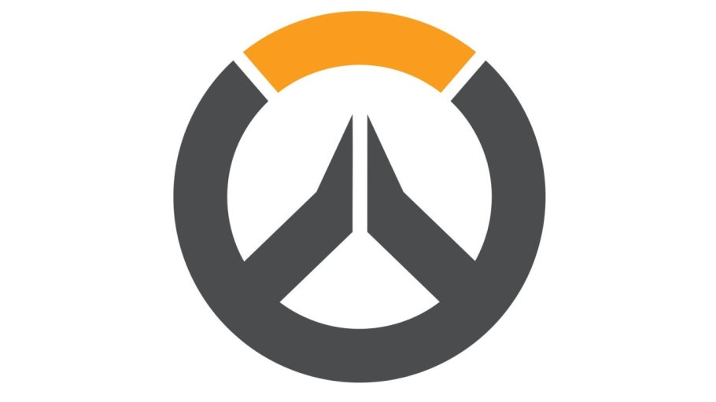
스킨 선택권은 넓힌다
01 개요·핵심 문제
두 문제를 따로 본다: 복귀율은 진입장벽, 매출은 스킨 상품 구성
블리자드 개발 · 한국 PC(Steam 제외)는 2026-08-12부터 넥슨이 퍼블리싱 (2026-03-30 계약 발표) · 공식 영웅 54명 (2026-11-19 확인)
| 구분 | 문제 | 제안 | 판단 지표 |
|---|---|---|---|
| 복귀율 | 신규·복귀 유저의 학습 부담 | PROJECT RE:START | 복귀 D7 잔존율 (목표 +2.0%p) |
| 매출 | 영웅별 상품 차이 · 고정형 묶음 | YOUR HERO · YOUR CHOICE | 패키지 구매 전환율 · 평균 결제 금액 |
배울 것은 계속 늘고, 스킨 상품은 영웅·구성에 따라 고를 폭이 다르다
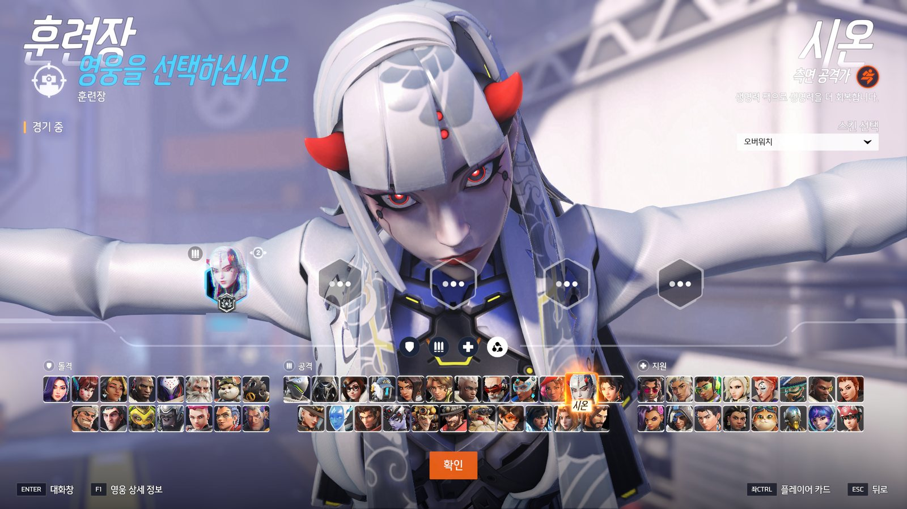
- 공식 영웅 54명 · 2026년 신규 9명
- 영웅 1명 설명 10개 (무기·궁극기·기술 3·지속 능력·특전 4 · 시온 기준)
- 유저 의견 63건 중 38건이 학습·적응 어려움
- 복귀 시 메인 화면에 변경점 요약 없음
- 영웅별 스킨 수 표기: 키리코 11종 · 메르시 25종
- 상점 추천 묶음: 15개 고정 구성 6,900 코인 (정가 9,500 · 27% 할인)
- 신화 스킨은 프리즘 50 → 10 → 10 → 10 단계 해금 (로드호그·우양 동일)
- 개별 스킨 가격 300 · 1,000 · 1,900 코인 (키리코 목록)
한눈에 보기 · 8개 항목 요약 펼쳐보기
① 신규·복귀 유저의 학습 부담 ② 영웅별 스킨 상품 수 차이와 고정형 묶음의 선택권 한계
유저 의견 63건 중 38건 학습·적응 어려움 · 공식 영웅 54명 · 캡처: 키리코 스킨 11종 vs 메르시 25종
PROJECT RE:START: 복귀 브리핑 → 첫 10경기 미션 → 전투 학습 카드
YOUR HERO (유저 참여형 스킨 제작) · YOUR CHOICE (선택형 스킨 패키지)
휴면 복귀 캠페인 · YOUR HERO 투표 캠페인 · YOUR CHOICE 출시 프로모션 · 선호 영웅 맞춤 노출 · 시즌 패키지 (기획 시안)
복귀 D7 +2.0%p · 패키지 구매 전환율 · 평균 결제 금액 · 개별 스킨 매출 잠식
YOUR CHOICE 예시 입력 기준 매출 +53% · 신규 스킨 손익분기 전환율 14.3% (모두 가정)
학습 부담과 이탈의 인과는 미검증 · 할인 패키지의 개별 스킨 매출 잠식
이미지 출처 및 촬영 정보
- 그림 1 · 프로젝트 작성자 개인 계정 게임 화면 캡처 (포트폴리오 비상업적 사용) · 촬영 2026-11-20 (파일 전송 시각 기준) · 클라이언트 2.25.1.0 · 한국어 UI
- 다른 플레이어 닉네임 가림: 그림 1
02 게임 화면·VOC
실전에서는 시간 제한 안에 고르고, 영웅 1명에 설명이 10개다
실제 자료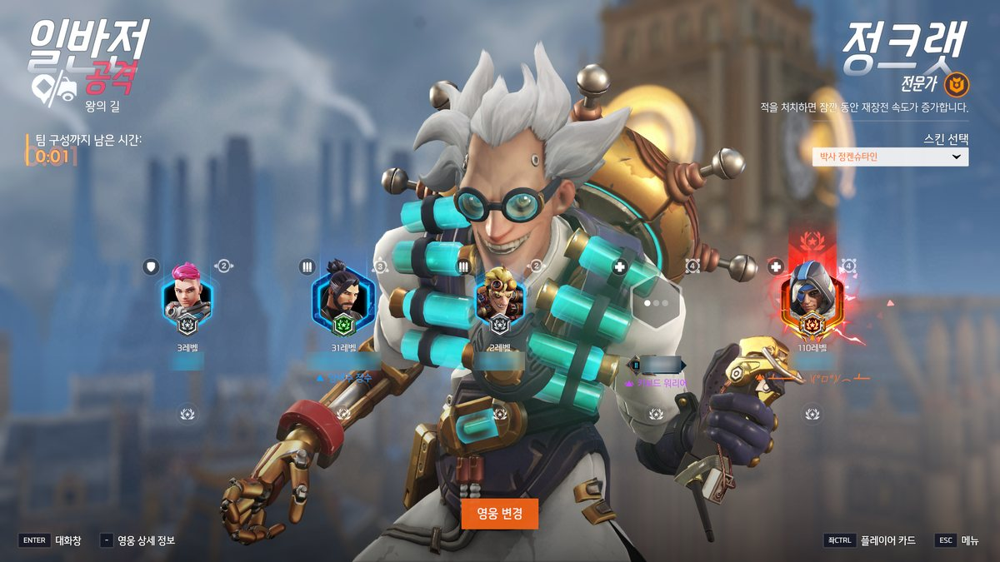
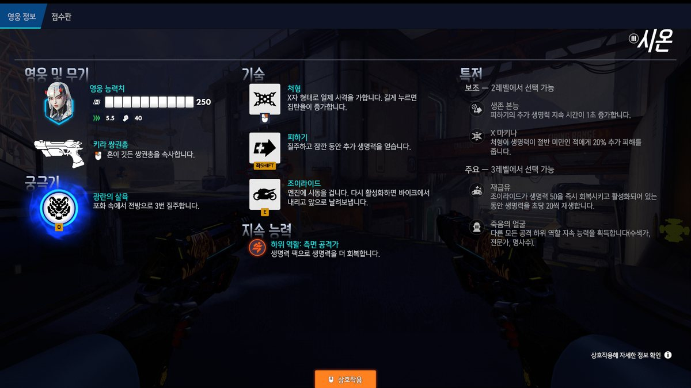
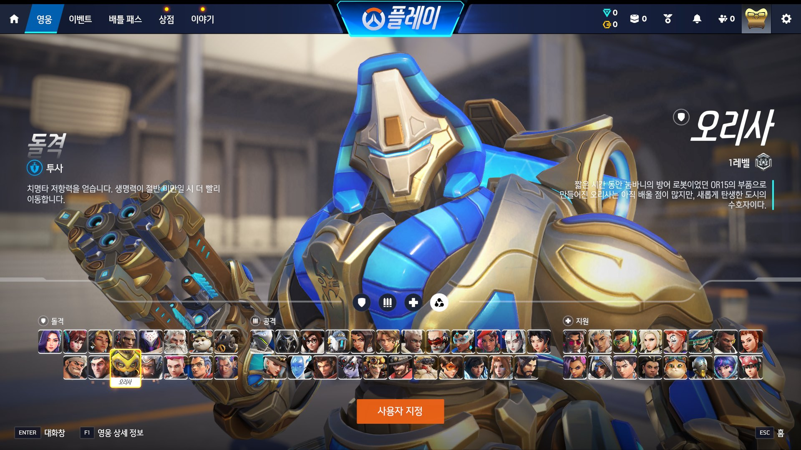
1역할 특성 투사 · 설명 2줄2영웅 레벨 1레벨3돌격 15명4공격 23명5지원 16명

화면별 관찰 사실 · 공식 영웅 54명 목록 펼쳐보기
- 영웅 선택 화면 하단에 54명의 초상화가 역할별로 한 번에 나열된다
- 초상화에는 이름이 없고, 고른 영웅(시온)만 이름이 표시된다
- 실제 경기에서는 '팀 구성까지 남은 시간' 안에 영웅을 골라야 한다 (캡처 시점 0:01)
- 고른 영웅의 설명은 우측 상단 한 줄뿐이다 — 정크랫: '적을 처치하면 잠깐 동안 재장전 속도가 증가합니다'
- 팀원이 고른 영웅을 보며 조합을 맞춰야 해, 낯선 영웅이 많을수록 판단할 것이 늘어난다
- 접속하면 이벤트 '군림' 배너와 이벤트·배틀 패스·상점 카드가 가장 크게 보인다
- 우측에는 발굴 입문·일일·주간 도전 과제가 표시된다
- 이 화면에는 마지막 접속 이후 바뀐 점(신규 영웅·역할 변경)을 요약한 안내가 따로 보이지 않는다
- 영웅 1명 설명에 무기 1 · 궁극기 1 · 기술 3 · 지속 능력 1 · 특전 4, 모두 10개 항목이 있다 (시온 기준)
- 54명이면 익힐 항목이 수백 개다. 특전은 경기 중 레벨에 따라 고르는 선택지라 상대 영웅의 변수도 늘어난다
- 이 화면은 영웅을 직접 골라 찾아 들어가야 하며, '방금 나를 처치한 기술'을 따로 보여 주지는 않는다
- 이벤트 도전 과제 8개가 모두 '게임 N회 완료 (승리 시 진척도 두 배)' 형식이다
- 대부분의 도전 과제는 사용자 지정 게임·AI 상대 연습에서 완료할 수 없다고 안내한다
- 기술 사용·역할 목표처럼 '배우는 행동'을 기준으로 한 과제는 이 화면에 없다
- 처치되면 화면 가운데에 'OOO에게 죽음' 알림과 우측 상단 처치 기록이 뜬다
- 누구에게 당했는지는 보이지만, 어떤 기술에 당했고 어떻게 대응하면 되는지는 이 화면에 없다
유저 의견 63건 중 38건이 '바뀐 것을 따라잡기 어렵다'
실제 자료원문을 직접 확인한 63건 (기준 50건 충족) · 인벤 28 · 블리자드 포럼 18 · 디시인사이드 17 · 제외·대기 14건 (Reddit 6건은 수집 환경 접근 차단) · 한 의견이 여러 유형에 걸치면 각각 집계
유저 의견 63건 전체 · 원문 링크 · 검색 · 표본과 분류 기준 펼쳐보기
| 의견 번호 | 플랫폼 | 작성일 | 유형 | 방향 | 주 분류 | 보조 분류 | 요약 | 원문 발췌 | 원문 | 확인일 |
|---|---|---|---|---|---|---|---|---|---|---|
| DC01 | 디시인사이드 오버워치2 마이너 갤러리 | 2026-11-19 | 복귀 | 부정 | 팀원 비매너·팀 플레이 부담 | 경쟁전에 복귀한 탱커가 팀원 욕설과 탱커 부담을 겪고 다시 경쟁전을 쉬겠다고 서술 | 탱커라는 통나무는 여전히 들기 힘들다. | 열기 | 2026-11-19 | |
| DC08 | 디시인사이드 오버워치2 마이너 갤러리 | 2026-11-19 | 신규 | 중립 | 영웅·스킬 학습 부담 | 입문 전에 어떤 영웅부터 해야 할지 추천을 요청 (영웅 선택 안내 수요) | 이속 빠르고 화력 센거 뭐없냐 | 열기 | 2026-11-19 | |
| DC09 | 디시인사이드 오버워치2 마이너 갤러리 | 2026-11-19 | 미상 | 긍정 | 긍정적인 학습 경험 | 팀원이 권한 조합을 처음 해 보고 매우 재미있었다고 서술 | 첫한타부터 이지랄나고 계속 이런구도로 감 | 열기 | 2026-11-19 | |
| DC10 | 디시인사이드 오버워치2 마이너 갤러리 | 2026-11-19 | 미상 | 부정 | 상대 영웅 대응 이해 부족 | 공중 영웅 위주의 상대 조합에 대응하지 못하고 밀렸다며 경쟁전에서도 흔한지 질문 | 죄다하늘에 떠다니니까 속수무책으로 밀렸네 | 열기 | 2026-11-19 | |
| DC11 | 디시인사이드 오버워치2 마이너 갤러리 | 2026-11-19 | 미상 | 중립 | 영웅·스킬 학습 부담 | 복귀 적응·변경점 파악 | 어떤 조합이 현재 메타인지 헷갈린다고 질문 (제목이 핵심 내용) | 근데 겐지소전 겐지에코 뭐가 메타픽인거지? | 열기 | 2026-11-19 |
| DC12 | 디시인사이드 오버워치2 마이너 갤러리 | 2026-11-19 | 미상 | 부정 | 기타 | 특정 스킬 피해량이 낮다며 상향을 요구 (밸런스 불만) | 아니 속도 데미지 좀 버프 줘라 | 열기 | 2026-11-19 | |
| DC13 | 디시인사이드 오버워치2 마이너 갤러리 | 2026-11-19 | 미상 | 중립 | 영웅·스킬 학습 부담 | 초보는 처음부터 손에 맞는 영웅을 골라야 한다는 경험담 | 처음부터 어느 정도 잘하는 영웅을 해야 함 | 열기 | 2026-11-19 | |
| DC14 | 디시인사이드 오버워치2 마이너 갤러리 | 2026-11-19 | 기존 | 부정 | 영웅·스킬 학습 부담 | 다른 지원 영웅은 다루지만 키리코의 투사체는 아무리 해도 못 맞히겠다고 서술 | 쿠나이는 진짜 내가 안란유저인데도 투사체 못맞추겠어 | 열기 | 2026-11-19 | |
| DC15 | 디시인사이드 오버워치2 마이너 갤러리 | 2026-11-19 | 미상 | 부정 | 복귀 적응·변경점 파악 | 스킬 사거리가 짧아 쓰기 어렵다며 하향된 것인지 질문 (변경점 파악 수요) | 사거리 너프된거임? | 열기 | 2026-11-19 | |
| DC16 | 디시인사이드 오버워치2 마이너 갤러리 | 2026-11-19 | 미상 | 중립 | 상대 영웅 대응 이해 부족 | 긍정적인 학습 경험 | 신규 영웅을 해 보니 재미있었지만 특정 상대 영웅은 잡기 어렵다고 서술 (긍정·부정 혼재) | 안란 시벌련은 노무 어렵다 잡는건 죠따어려운데 | 열기 | 2026-11-19 |
| DC17 | 디시인사이드 오버워치2 마이너 갤러리 | 2026-11-19 | 기존 | 중립 | 팀원 비매너·팀 플레이 부담 | 긍정적인 학습 경험 | 중간 등급 구간은 트롤과 언쟁이 많아 힘들지만 실력이 오르며 게임이 더 재밌어졌다고 서술 | 플에다마 네 구간에서 몇십, 몇백 판을 박아본 내가 | 열기 | 2026-11-19 |
| DC18 | 디시인사이드 오버워치2 마이너 갤러리 | 2026-11-19 | 미상 | 부정 | 상대 영웅 대응 이해 부족 | 팀원 지원가가 상대 영웅에 맞는 대응을 하지 못한다고 지적 (관찰) | 아무리 그래도 스킬 다있는 섭딜 한테 스킬없이 덤비는게 말이되나 | 열기 | 2026-11-19 | |
| DC19 | 디시인사이드 오버워치2 마이너 갤러리 | 2026-11-19 | 미상 | 부정 | 매칭·실력 차이 | 한 경기에 여러 등급이 섞여 매칭됐다고 불만 표시 | 그마2 마2 다2 골고루네 | 열기 | 2026-11-19 | |
| DC02 | 디시인사이드 오버워치2 마이너 갤러리 | 2026-11-18 | 복귀 | 부정 | 복귀 적응·변경점 파악 | 매칭·실력 차이 | 1년 만에 돌아오니 게임이 어렵고, 예전처럼 힐을 기대하다 죽는 등 바뀐 전투 흐름에 적응하기 어렵다고 서술 | 겜 ㅈㄴ 어렵노 | 열기 | 2026-11-19 |
| DC06 | 디시인사이드 오버워치2 마이너 갤러리 | 2026-11-18 | 미상 | 부정 | 매칭·실력 차이 | 팀원 비매너·팀 플레이 부담 | 매칭 인원이 부족해 실력 차가 큰 경기와 고의 패배가 많다며 게임을 삭제했다고 서술 | 사람이 얼마나 없는지 찐뉴비까지 잡아주고 | 열기 | 2026-11-19 |
| DC03 | 디시인사이드 오버워치2 마이너 갤러리 | 2026-11-17 | 복귀 | 부정 | 팀원 비매너·팀 플레이 부담 | 이벤트를 보고 복귀했는데 빠른 대전에서 화가 난 이용자가 많아 놀랐다고 서술 | 사람들 왜이렇게 화가 많음?ㄷㄷ | 열기 | 2026-11-19 | |
| DC04 | 디시인사이드 오버워치2 마이너 갤러리 | 2026-11-17 | 복귀 | 중립 | 기타 | 복귀 후 현재 경기 운영 방식(상대를 끌어들여 잡는 플레이)이 높은 등급까지 통한다고 관찰 | 온 세상이 팀원 베이팅해서 벗겨먹기만 하는게 그마까지통함 | 열기 | 2026-11-19 | |
| KO15 | 오버워치 인벤 자유게시판 | 2026-11-14 | 미상 | 부정 | 전투 중 정보 과부하 | 영웅·스킬 학습 부담 | FPS 경험자도 배우기 어려운 고유 개념이 많은데 게임 안에서 배울 곳이 없어 커뮤니티·유튜브를 보지 않는 이용자는 금방 이탈한다고 주장하며 게임 내 튜토리얼 정리를 요구 | 그냥 게임 튜토리얼로 정리해줬으면 함 | 열기 | 2026-11-19 |
| KO07 | 오버워치 인벤 자유게시판 | 2026-11-09 | 복귀 | 중립 | 팀원 비매너·팀 플레이 부담 | 넥슨 이관 이후 고의 패배(패작)가 줄었는지 복귀 전에 문의 | 넥슨으로 옮겨지고 패작 많이 줄었나요? | 열기 | 2026-11-19 | |
| KO26 | 오버워치 인벤 자유게시판 | 2026-11-08 | 미상 | 중립 | 기타 | 특정 영웅 궁극기로 맵 상층에 진입하는 방법을 모르겠다고 질문 (맵·조작 학습) | 저 중간을 어떻게 조작을 해서 들어가야하는지 모르겠음. | 열기 | 2026-11-19 | |
| KO01 | 오버워치 인벤 자유게시판 | 2026-10-30 | 복귀 | 부정 | 매칭·실력 차이 | 팀원 비매너·팀 플레이 부담 | 복귀 후 경쟁전에서 일방적인 경기가 많고 팀 보이스 미사용·비협조가 늘었다고 느낌. 정상적인 판도 어느 정도 있다고 인정 | 정상적인 판도 어느정도 있긴하다 | 열기 | 2026-11-19 |
| KO29 | 오버워치 인벤 자유게시판 | 2026-10-26 | 미상 | 부정 | 영웅·스킬 학습 부담 | 신규 영웅에 적응하는 것이 번거롭다고 서술 (본문 'ㅈㄱㄴ' - 제목이 곧 내용) | 신캐 적응하기귀찮다 | 열기 | 2026-11-19 | |
| KO09 | 오버워치 인벤 자유게시판 | 2026-10-19 | 복귀 | 부정 | 복귀 적응·변경점 파악 | 스킬 키 배치·이동감·스킬 효과가 바뀌어 적응하지 못했고 빠른 대전에서 어디서 무엇을 해야 할지 모르겠다고 서술 | 어디서 뭘 하고 있어야 하는지 모르겠음 | 열기 | 2026-11-19 | |
| KO18 | 오버워치 인벤 자유게시판 | 2026-10-03 | 복귀 | 부정 | 복귀 적응·변경점 파악 | 영웅·스킬 학습 부담 | 복귀 후 에임도 안 맞고 무엇을 해야 할지 모르겠다고 서술 | 에임도 못맞추겠고 뭘 해야 하는지도 모르겠네요 | 열기 | 2026-11-19 |
| KO19 | 오버워치 인벤 자유게시판 | 2026-10-03 | 미상 | 부정 | 매칭·실력 차이 | 높은 등급에서는 매칭이 잘 잡히지 않는다고 서술 | 고티어 겜이안잡힘 | 열기 | 2026-11-19 | |
| EN01 | Blizzard 공식 포럼(US) | 2026-09-14 | 복귀 | 부정 | 상대 영웅 대응 이해 부족 | 복귀 적응·변경점 파악 | 복귀 후 10경기 내내 신규 영웅 D.Mon을 상대했고 이 영웅을 상대로 어떻게 플레이해야 하는지 배우기 어려워 좌절했다고 서술 | It's really frustrating trying to learn how to play against a hero who feels so aggressively overkitted. | 열기 | 2026-11-19 |
| EN02 | Blizzard 공식 포럼(US) | 2026-09-14 | 기존 | 부정 | 영웅·스킬 학습 부담 | 복귀 적응·변경점 파악 | 신규 영웅이 적응할 시간 없이 바로 경쟁전에 투입된다고 불만 표시 | Now they just throw new unbalanced heroes into comp without giving anyone time to get used to new heroes | 열기 | 2026-11-19 |
| KO10 | 오버워치 인벤 자유게시판 | 2026-09-14 | 신규 | 부정 | 매칭·실력 차이 | 빠른 대전 6연패로 게임을 그만하고 싶다며 한 판이라도 이기고 싶다고 토로 | 이제그만끄고싶다…한판만 이기게 해줘라… | 열기 | 2026-11-19 | |
| KO27 | 오버워치 인벤 자유게시판 | 2026-09-13 | 미상 | 중립 | 영웅·스킬 학습 부담 | 신규 영웅 Doctrine을 연습장에서 써 보고 장단점을 정리하며 높은 숙련도가 필요하다고 평가 | 단점은 높은 우클 숙련도가 필요해 보임 | 열기 | 2026-11-19 | |
| KO13 | 오버워치 인벤 자유게시판 | 2026-09-12 | 신규 | 긍정 | 긍정적인 학습 경험 | 상대 영웅 대응 이해 부족 | 힐러를 배우며 상대 조합별 대응법을 직접 정리해 공유하고 추가 팁을 요청 (상성 학습을 스스로 즐기는 사례) | 또 뭐 있나요 형님들 | 열기 | 2026-11-19 |
| KO17 | 오버워치 인벤 자유게시판 | 2026-09-05 | 미상 | 긍정 | 기타 | 신규 이용자가 늘어난 것을 반기며 떠나지 말고 함께 하자고 서술 (기존 커뮤니티의 신규 환영 정서) | 다들 너무 귀여워 접지마 나랑 놀아 ㅠㅠ | 열기 | 2026-11-19 | |
| KO05 | 오버워치 인벤 자유게시판 | 2026-08-19 | 복귀 | 중립 | 영웅·스킬 학습 부담 | 복귀 적응·변경점 파악 | 예전 주력 영웅(메르시)의 현재 평가가 낮다는 말을 듣고 놀랐으며 경쟁전을 위해 어떤 지원 영웅까지 익혀야 하는지 질문 | 메르시는 가능하면 계속 하고 싶지만 | 열기 | 2026-11-19 |
| KO16 | 오버워치 인벤 자유게시판 | 2026-08-16 | 미상 | 중립 | 영웅·스킬 학습 부담 | 넥슨 계정 연동 이후 신규 이용자가 늘었다고 느끼며 포지션 운영을 잘 모르는 탱커가 많아졌다고 관찰 | 자리야 할줄 모르는 탱들 개많아짐 | 열기 | 2026-11-19 | |
| KO20 | 오버워치 인벤 자유게시판 | 2026-08-14 | 미상 | 부정 | 영웅·스킬 학습 부담 | 신규 영웅 D.Mon이 단순해 보이지만 조작이 어렵다고 서술 | 단순한거같은데 너무 어려움 | 열기 | 2026-11-19 | |
| KO06 | 오버워치 인벤 자유게시판 | 2026-08-11 | 복귀 | 부정 | 영웅·스킬 학습 부담 | 복귀 적응·변경점 파악 | 복귀 후 신규 영웅과 신규 맵에 대한 이해가 부족해 등급이 크게 떨어졌고 배울 방법을 찾고 있다고 서술 | 대리겜해주는데밖에 못찾겠음 | 열기 | 2026-11-19 |
| KO21 | 오버워치 인벤 자유게시판 | 2026-08-10 | 미상 | 중립 | 영웅·스킬 학습 부담 | 대부분의 돌격 영웅이 어려워 할 만한 두 영웅만 연습해도 되는지 질문 | 다른건 죄다 어려운데 | 열기 | 2026-11-19 | |
| KO11 | 오버워치 인벤 자유게시판 | 2026-08-03 | 신규 | 긍정 | 긍정적인 학습 경험 | 처음 해 본 탱커 영웅(라마트라)이 매우 재미있었다며 비슷한 손맛의 영웅을 추천해 달라고 요청 | 캐릭이 너모재밌습니다 | 열기 | 2026-11-19 | |
| KO23 | 오버워치 인벤 자유게시판 | 2026-07-29 | 미상 | 부정 | 상대 영웅 대응 이해 부족 | 직접 해 보니 어렵다며 회피하는 상대를 어떻게 공격해야 하는지 질문 | 애가 걍 작정하고 회피무빙하는 거 같은데? | 열기 | 2026-11-19 | |
| KO08 | 오버워치 인벤 자유게시판 | 2026-07-27 | 복귀 | 중립 | 복귀 적응·변경점 파악 | 영웅·스킬 학습 부담 | 복귀하면서 넥슨과 Steam 중 무엇을 선택해야 할지 혼란스러워하고 신규 영웅이 많이 늘어난 점에 놀람 | 신캐가 왜이리많이나온고임? | 열기 | 2026-11-19 |
| KO02 | 오버워치 인벤 자유게시판 | 2026-07-23 | 복귀 | 부정 | 복귀 적응·변경점 파악 | 1년 쉬고 돌아오니 이전보다 실력이 크게 떨어졌다고 느끼며 유튜브 영상과 1:1 강의로 다시 배울 계획이라고 서술 | 옵치를 거의 1년간 쉬었음 | 열기 | 2026-11-19 | |
| KO24 | 오버워치 인벤 자유게시판 | 2026-07-13 | 미상 | 중립 | 영웅·스킬 학습 부담 | 하루 종일 한 영웅을 연습했지만 어렵다며 조언을 요청 | 얘로 포킹치는거 너무어려운데 뭐 조언 있음? | 열기 | 2026-11-19 | |
| EN03 | Blizzard 공식 포럼(US) | 2026-07-02 | 미상 | 부정 | 복귀 적응·변경점 파악 | 빠른 영웅 출시가 자주 플레이하지 않는 이용자에게 큰 재학습 부담을 만든다고 지적 (본인 경험 여부 불명) | it creates a giant re-learning curve for anyone who doesn't play the game regularly | 열기 | 2026-11-19 | |
| EN04 | Blizzard 공식 포럼(US) | 2026-07-02 | 기존 | 긍정 | 긍정적인 학습 경험 | 신규 맵과 영웅 추가가 좋았다고 평가 (영웅 다양성 긍정) | New maps and heroes have been great. | 열기 | 2026-11-19 | |
| KO04 | 오버워치 인벤 자유게시판 | 2026-07-01 | 복귀 | 중립 | 영웅·스킬 학습 부담 | 복귀 적응·변경점 파악 | 복귀 3주차에도 맵과 영웅 파악이 다 되지 않았다고 서술. 한쪽으로 크게 밀리는 경기도 자주 있다고 언급 | 문제는 아직도 맵과 영웅 파악이 다 안됨 | 열기 | 2026-11-19 |
| KO12 | 오버워치 인벤 자유게시판 | 2026-06-30 | 신규 | 부정 | 매칭·실력 차이 | 솔로 빠른 대전 30판 중 약 20판을 일방적으로 졌고 상대와 수준 차이가 크게 느껴진다며 매칭 시스템을 질문 | 진짜 농락을 당햇어요 | 열기 | 2026-11-19 | |
| KO28 | 오버워치 인벤 자유게시판 | 2026-06-27 | 미상 | 부정 | 전투 중 정보 과부하 | 영웅·스킬 학습 부담 | 특전 선택지가 헷갈려 무엇을 골라야 할지 모르겠다고 질문 | 사거리 늘어나서 에임 감각 이상하게 만드는 주요특전 | 열기 | 2026-11-19 |
| KO14 | 오버워치 인벤 자유게시판 | 2026-06-21 | 신규 | 부정 | 팀원 비매너·팀 플레이 부담 | 빠른 대전에서 다른 이용자에게 욕설과 비난을 들어 화가 나며 대처 방법을 문의 | 어떻게 할 방법 없을까요 | 열기 | 2026-11-19 | |
| KO03 | 오버워치 인벤 자유게시판 | 2026-06-18 | 복귀 | 부정 | 복귀 적응·변경점 파악 | 매칭·실력 차이 | 복귀 후 이유를 모른 채 연패(1승 13패)가 이어지고 무엇을 놓치는지 몰라 게임을 접을지 고민한다고 서술 | 이유없이 연패하고 정치질까지 당하니까 | 열기 | 2026-11-19 |
| KO25 | 오버워치 인벤 자유게시판 | 2026-06-17 | 미상 | 부정 | 영웅·스킬 학습 부담 | 출시 직후 신규 영웅 Shion이 매우 어렵다고 서술 (본문은 짧고 제목이 핵심) | 시온 겁나 어렵네 | 열기 | 2026-11-19 | |
| EN05 | Blizzard 공식 포럼(US) | 2025-02-16 | 신규 | 부정 | 매칭·실력 차이 | 빠른 대전에서 자신보다 훨씬 숙련된 이용자들과 매칭된다고 서술 | get thrown into a “Quickplay” game with players way better than me | 열기 | 2026-11-19 | |
| EN06 | Blizzard 공식 포럼(US) | 2025-02-16 | 기존 | 부정 | 전투 중 정보 과부하 | 패시브와 수치 정보가 많아 처음에는 무엇을 의미하는지 이해하기 어렵다고 지적 | you have a lot of passives with a lot of numbers and you will not get what anything means | 열기 | 2026-11-19 | |
| EN07 | Blizzard 공식 포럼(US) | 2025-02-16 | 기존 | 부정 | 팀원 비매너·팀 플레이 부담 | 팀원에게 비난받는 경험을 서술 | instead im getting yelled at by 13 yr olds | 열기 | 2026-11-19 | |
| EN08 | Blizzard 공식 포럼(US) | 2025-02-16 | 기존 | 중립 | 상대 영웅 대응 이해 부족 | 영웅 간 상성은 실전에서 직접 부딪히며 배워야 한다고 서술 | you will still have to learn character matchups and the like on the fly. | 열기 | 2026-11-19 | |
| EN09 | Blizzard 공식 포럼(US) | 2025-02-16 | 기존 | 중립 | 기타 | 입문 후 약 3개월간 AI 상대로만 연습하며 적응했다고 서술 (학습 경로 사례) | I played against the AI exclusively for probably the first three months of the game. | 열기 | 2026-11-19 | |
| EN14 | Blizzard 공식 포럼(US) | 2024-08-24 | 기존 | 부정 | 영웅·스킬 학습 부담 | 새 캐릭터를 익히는 것이 사실상 새 게임을 배우는 것과 같다고 서술 | Picking up a new character in Overwatch right now is basically learning a whole new game. | 열기 | 2026-11-19 | |
| EN15 | Blizzard 공식 포럼(US) | 2024-08-24 | 기존 | 긍정 | 긍정적인 학습 경험 | 입문 시 AI 상대 연습으로 맵과 영웅 기본기를 익힌 것이 좋았다고 서술 | I played a lot of vs ai when i started. It was a good way to learn the maps and basics of all heroes. | 열기 | 2026-11-19 | |
| EN10 | Blizzard 공식 포럼(US) | 2024-08-23 | 기존 | 부정 | 영웅·스킬 학습 부담 | 학생들이 영웅 수와 고유 스킬 때문에 게임이 너무 복잡하다고 느꼈다고 전달 | It could take months to get a decent handle on the game’s complexity. | 열기 | 2026-11-19 | |
| EN11 | Blizzard 공식 포럼(US) | 2024-08-23 | 기존 | 부정 | 영웅·스킬 학습 부담 | Ana를 처음 배울 때 즐겁지 않은 경험이었다고 회고 | I remember when I was learning to use Ana… it was not a very pleasant experience. | 열기 | 2026-11-19 | |
| EN12 | Blizzard 공식 포럼(US) | 2024-08-23 | 기존 | 긍정 | 긍정적인 학습 경험 | 복잡함 자체가 오버워치의 매력이라고 서술 (반대 의견) | One of the things that draws me to OW is that it’s complex. | 열기 | 2026-11-19 | |
| EN13 | Blizzard 공식 포럼(US) | 2024-08-23 | 기존 | 긍정 | 긍정적인 학습 경험 | 처음 시작했을 때 새 맵과 캐릭터를 배우는 과정이 즐거웠다고 서술 (반대 의견) | Personally I enjoyed learning all the new maps and new characters when I first started playing | 열기 | 2026-11-19 | |
| EN16 | Blizzard 공식 포럼(US) | 2023-09-26 | 기존 | 부정 | 영웅·스킬 학습 부담 | 솜브라를 배우기 어려웠고 겐지 스킬 메커니즘도 한참 뒤에 알게 됐다고 서술 | I think Sombra is a relatively hard character to learn | 열기 | 2026-11-19 | |
| EN17 | Blizzard 공식 포럼(US) | 2023-09-26 | 미상 | 부정 | 영웅·스킬 학습 부담 | 특정 영웅의 갈고리-내려찍기 운용에 필요한 판단이 어렵다고 서술 | The awareness needed to grapple up and slam down is so difficult for me to get right too. | 열기 | 2026-11-19 | |
| EN18 | Blizzard 공식 포럼(EU) | 2021-10-16 | 신규 | 긍정 | 긍정적인 학습 경험 | 조작 적응이 어려울 줄 알았지만 괜찮았다고 서술 (오버워치 1 시기 게시글) | I though that it will be hard to get familiar with controls , but it's all goo ! | 열기 | 2026-11-19 |
- 인벤 28 · 블리자드 포럼 18 · 디시인사이드 17
- 미상 25 · 복귀 15 · 기존 15 · 신규 8
- 한국어 45 · 영어 18
- 원문 링크를 열어 내용을 직접 확인한 글만 '검증 완료'
- 같은 작성자로 추정되는 글은 1건만 집계
- 주제와 무관하거나 원문을 확인할 수 없는 글은 제외 (아래 목록)
- 기획자가 직접 분류 (AI 자동 분류 아님)
- 주 분류 1개 + 보조 분류 복수 → 합계가 의견 수보다 많음
- 긍정·중립 의견과 반대 사례도 그대로 포함
- 자발적 게시글이라 전체 이용자를 대표하는 통계 표본이 아니다
- 불편을 겪은 사람의 글이 더 많을 수 있다
- 언급 수는 '문제의 존재'를 보여 줄 뿐 '비율'이나 '이탈 원인'을 뜻하지 않는다
표본의 한계 · 수집 방법
- 자발적 게시글이라 불편을 겪은 사람의 글이 많을 수 있다. 전체 이용자 설문이 아니다.
- 분류와 의견 방향은 AI 모델이 아닌 기획자가 판단했다. 유형은 작성자가 밝힌 경우만 표시하고 나머지는 '미상'이다.
- 같은 작성자로 추정되는 글은 1건만 셌다. 닉네임을 저장하지 않아 다른 글이 같은 사람일 가능성은 남아 있다.
- Reddit은 수집 환경에서 접근이 차단됐고, 유튜브는 댓글을 불러올 수 없어 0건이다.
- 플랫폼: 오버워치 인벤 자유게시판 28 · Blizzard 공식 포럼(US) 17 · 디시인사이드 오버워치2 마이너 갤러리 17 · Blizzard 공식 포럼(EU) 1 · 작성일 2021-10-16 ~ 2026-11-19 · 확인일 2026-11-19 ~ 2026-11-19
- 검색 키워드 목록: 수집 기준 미기록 → 다음 수집부터 키워드·기간·플랫폼을 먼저 고정하고 무작위 표본 추출 + 2인 분류 일치율 기록
DC05디시인사이드 오버워치2 마이너 갤러리 · 원문 삭제됨 (링크 없음) — 제외 (원문 삭제) · 원문 확인 (2026-11-19) → 2026-11-23 재확인 시 작성자 삭제(404 · dcinside 삭제 안내) · 웹 아카이브 보관본 없음 → 검증 근거에서 제외
KO22오버워치 인벤 자유게시판 · https://www.inven.co.kr/board/overwatch/4538/5934947 — 중복 제외 · KO02와 동일 작성자로 추정 (같은 1년 투병 후 복귀·1:1 강의 언급) - 작성자 단위 중복 방지를 위해 집계 제외
EX01오버워치 인벤 자유게시판 · https://www.inven.co.kr/board/overwatch/4538/5941391 — 제외 (주제 무관) · 신규 영웅 컨셉 우려 - 학습·적응 경험 아님
EX02오버워치 인벤 자유게시판 · https://www.inven.co.kr/board/overwatch/4538/5941611 — 제외 (주제 무관) · 특정 영웅 미노출 감상
EX03디시인사이드 오버워치2 마이너 갤러리 · https://gall.dcinside.com/mgallery/board/view/?id=overwatch2&no=1990889 — 제외 (본문 불충분) · 본문이 안내 문구뿐이라 의견 확인 불가
EX04디시인사이드 오버워치2 마이너 갤러리 · https://gall.dcinside.com/mgallery/board/view/?id=overwatch2&no=1990937 — 제외 (본문 불충분) · 본문이 안내 문구뿐이라 의견 확인 불가
EX05디시인사이드 오버워치2 마이너 갤러리 · https://gall.dcinside.com/mgallery/board/view/?id=overwatch2&no=1990820 — 제외 (부적절·주제 무관) · 성적 표현 포함 - 학습·적응 경험 아님
RD01Reddit r/OverwatchUniversity · https://www.reddit.com/r/OverwatchUniversity/comments/1s1tk1u/ — 검증 대기 (수집 환경에서 Reddit 접근 차단) · 사용자 제공 설명: 신규 유저의 정보 과부하 - 원문 확인 전 집계 제외
RD02Reddit r/OverwatchUniversity · https://www.reddit.com/r/OverwatchUniversity/comments/1w581bc/ — 검증 대기 (수집 환경에서 Reddit 접근 차단) · 사용자 제공 설명: 2018년 이후 복귀 유저의 적응 어려움 - 원문 확인 전 집계 제외
RD03Reddit r/Overwatch · https://www.reddit.com/r/Overwatch/comments/1wh73z5/ — 검증 대기 (수집 환경에서 Reddit 접근 차단) · 사용자 제공 설명: 1200시간 플레이한 복귀 유저의 새 콘텐츠 부담 - 원문 확인 전 집계 제외
RD04Reddit r/Overwatch · https://www.reddit.com/r/Overwatch/comments/1ume3t7/ — 검증 대기 (수집 환경에서 Reddit 접근 차단) · 사용자 제공 설명: 신규 영웅과 기존 영웅 변경점을 알고 싶은 복귀 유저 - 원문 확인 전 집계 제외
RD05Reddit r/Overwatch · https://www.reddit.com/r/Overwatch/comments/1v9zfwx/ — 검증 대기 (수집 환경에서 Reddit 접근 차단) · 사용자 제공 설명: 복귀 후 전투 시스템 변화와 피해량 이해 어려움 - 원문 확인 전 집계 제외
RD06Reddit r/Overwatch · https://www.reddit.com/r/Overwatch/comments/1r6zza6/ — 검증 대기 (수집 환경에서 Reddit 접근 차단) · 사용자 제공 설명: 새 시즌과 영웅 추가 긍정 평가 - 원문 확인 전 집계 제외
YT01YouTube · https://www.youtube.com/watch?v=84n-gjznm3k — 검증 대기 (영상 제목만 확인 · 채널·게시일·댓글 원문 확인 불가) · 영상 콘텐츠는 이용자 댓글이 아니므로 집계 제외 - 댓글 원문 확인 시 개별 행으로 추가
원인 4단계 근거·검증 지표 · 다른 원인 5가지 펼쳐보기
블리자드 기존 지원 6건 · 넥슨 퍼블리싱 범위 펼쳐보기
| 기능 | 한계 또는 확인이 필요한 부분 |
|---|---|
| 오버워치 2 신규 유저 온보딩(FTUE) 도입 | 2025-08 변경으로 영웅 해금 단계는 폐지됨 |
| 신규 유저 전 영웅 즉시 개방 | 선택지는 넓어졌지만 어떤 순서로 배울지 안내하는 기능은 확인되지 않음 (검증 필요) |
| 복귀 유저용 요약 안내 (공지 기사) | 게임 안 제공 여부, 마지막 플레이 시점 기준 개인화 여부는 공지에 없음 (검증 필요) |
| 스킬 키워드 설명 확장 | 스킬 '정의'는 알려 주지만, 어떤 상대에게 왜 졌는지 연결해 주는지는 확인되지 않음 (검증 필요) |
| UI 개편 · 하위 역할 도입 | 기존 유저도 새 역할 체계를 다시 익혀야 함 |
| 2026년 신규 영웅 9명 | 연간 10명 출시 계획 (공식 스포트라이트) |
역할 구분 — 넥슨: 한국 PC 버전(Steam 제외) 퍼블리싱·라이브 운영·PC방 / 블리자드: 게임 개발·글로벌 운영·Steam·콘솔
| 항목 | 확인 내용 | 출처 |
|---|---|---|
| 넥슨이 취득한 권한의 범위 | "한국 지역 내 퍼블리싱 및 라이브 서비스 운영" · 적용 대상 "한국 지역의 PC 버전 오버워치 서비스(Steam 제외)" · Steam·콘솔은 "기존과 동일하게 블리자드가 퍼블리싱 및 운영" | 공식 · 공식 |
| Battle.net 한국 PC 버전과의 관계 | 한국 PC 플레이어 매칭은 "Battle.net PC 플랫폼 및 넥슨 클라이언트를 이용하는 플레이어 간에" 이루어질 예정 (공식 FAQ). 언론: 기존 Battle.net 이용 방식에 더해 넥슨닷컴·넥슨플러그에서도 이용 가능, 8/11까지 넥슨-Battle.net 사전 계정 연동 진행 | 공식 · 언론 |
| 계약 발표일과 실제 서비스 이관 일정 | 계약 발표: 2026-03-30 (블리자드 뉴스 본문 '30일 밝혔다' + 언론 3/30 보도). 공식 FAQ: "올해 내에 시작될 예정", 진척도는 전환 후에도 유지. 실제 개시: 2026-08-12 (언론 보도). 발표~개시 약 4.5개월 차이 | 공식 · 공식 · 언론 |
| 한국 중심 콘텐츠 및 현지화 계획 | "한국 시장 맞춤형 하이퍼 로컬라이징 콘텐츠" (공식 뉴스), "한국에 초점을 둔 더 많은 콘텐츠" · 세부 내용은 추후 안내 (FAQ) | 공식 · 공식 |
| PC방 연계 서비스와 혜택 | "PC방 생태계를 확장" (공식 뉴스), PC방 중심 혜택·프로그램을 점진적으로 확대 예정 (FAQ). 실제 진행(언론): 8/29~9/13 PC방 이벤트 - PC방 무료 이용 시간 지원, 누적 PC방 플레이 보상, 넥슨캐시 응모 | 공식 · 공식 · 언론 · 언론 |
| 한국 이용자 서비스 및 지원 | "더욱 현지화된 서비스 및 지원" 제공 (FAQ) · 고객지원 체계의 구체 내용은 언급 없음 | 공식 |
| 한국 현지 인재 채용 | 공식 뉴스: "추가적인 현지 인재 채용에 나설 예정" · FAQ에는 언급 없음 | 공식 |
시장 지표 (Steam 동시접속 · 한국 PC방 점유율) · 원자료 — 복귀 이탈과 인과 연결 안 함 펼쳐보기
탭게임트릭스
탭더로그
자세히 보기 · 출처와 해석 주의 펼쳐보기
출처: SteamCharts – Overwatch (App 2357570) · 확인일 2026-11-19
자세히 보기 · 원자료와 집계 기준 펼쳐보기
| 집계원 | 기준일 | 단위 | 순위 | 점유율(%) | 보도 매체 | 원문 | 상태 |
|---|---|---|---|---|---|---|---|
| 게임트릭스 | 2026-04-13 | 주간(4월 3주차) | 5 | 5.47 | EBN산업경제(다음 뉴스) | 열기 | 언론 보도 확인 |
| 게임트릭스 | 2026-08-01 | 일간 | 7 | 3.59 | 아이러브PC방 | 열기 | 언론 보도 확인 |
| 게임트릭스 | 2026-08-12 | 일간 | 5 | 4.3 | 아이러브PC방 | 열기 | 언론 보도 확인 |
| 게임트릭스 | 2026-08-15 | 일간 | 5 | 3.82 | 아이러브PC방 | 열기 | 언론 보도 확인 |
| 게임트릭스 | 2026-08-16 | 일간 | 5 | 3.88 | 아이러브PC방 | 열기 | 언론 보도 확인 |
| 게임트릭스 | 2026-08-17 | 일간 | 5 | 4.04 | 아이러브PC방 | 열기 | 언론 보도 확인 |
| 게임트릭스 | 2026-10-05 | 주간(10월 2주차) | 5 | 6.02 | 아이러브PC방 | 열기 | 언론 보도 확인 |
| 더로그 | 2026-08-01 | 일간 | 6 | 4.99 | 아이러브PC방 | 열기 | 언론 보도 확인 |
| 더로그 | 2026-08-12 | 일간 | 5 | 5.92 | 아이러브PC방 | 열기 | 언론 보도 확인 |
| 더로그 | 2026-08-29 | 일간 | 3 | 9 | Inven Global | 열기 | 언론 보도 확인 |
| 더로그 | 2026-09-06 | 일간 | 3 | 9.17 | 아이러브PC방 | 열기 | 언론 보도 확인 |
| 더로그 | 2026-09-13 | 일간 | 2 | 11.01 | 아이러브PC방 | 열기 | 언론 보도 확인 |
| 게임트릭스 | 기준일 불명 | 5 | 4.88 | 이코노미스트 | 열기 | 기준일 불명 - 그래프 제외 | |
| 게임트릭스 | 2026-03-01 | 계약 발표 이전 | 검증 대기 |
이미지 출처 및 촬영 정보
- 그림 1, 2 · 프로젝트 작성자 개인 계정 게임 화면 캡처 (포트폴리오 비상업적 사용) · 촬영 2026-11-20 (파일 전송 시각 기준) · 클라이언트 2.25.1.0 · 한국어 UI
- 다른 플레이어 닉네임 가림: 그림 1
03 PROJECT RE:START
신규와 복귀를 나눠, 필요한 것만 먼저 보여 준다
기획 시안영웅·밸런스·매칭은 그대로 · 모든 안내는 끌 수 있다
복귀 메인 화면에 변경점 안내가 없고, 신규는 무엇부터 익힐지 모른다
검증 의견 63건 중 38건이 학습·적응 어려움 · 영웅 54명 · 1명당 설명 10개
신규·복귀를 나눠 복귀 브리핑 · 전투 학습 카드 · 첫 10경기 미션
복귀 D7 잔존율 +2.0%p 목표 (가정 · A/B로 검증)
- 1접속 · 복귀 판별90일 이상 미접속 = 복귀 · 신규는 C로
- 2A 복귀 브리핑마지막 접속 이후 바뀐 것만 3분
- 3추천 영웅하던 역할 기준 1~2명 · 연습장 바로가기
- 4C 첫 10경기 미션역할·기술 → 상대 대응 → 팀 플레이 (복귀는 선택)
- 5B 전투 학습 카드경기 후 어려웠던 상대의 대처법
무엇이 바뀌었는지 모른 채 시작 → 마지막 접속 이후 바뀐 것만 3분 요약 + 추천 영웅
KPI 복귀 D7 잔존율왜 졌는지 모름 → 어려웠던 상대의 기술·대처법 확인
KPI 카드 사용률무엇부터 익힐지 모름 → 역할·기술 → 상대 대응 → 팀 플레이 순서
KPI 신규 D7 잔존율탭A 복귀 브리핑

탭B 전투 학습 카드

탭C 첫 10경기 미션

전략 6개 상세 · 문제 → 개선 방안 → 운영 방식 → 기대 효과 → 측정 KPI 펼쳐보기
| 전략 | 문제 | 개선 방안 | 운영 방식 | 기대 효과 (검증 전) | 측정 KPI |
|---|---|---|---|---|---|
| 신규·복귀 구분 적응 경로 | 신규와 복귀 유저가 같은 첫 화면에서 시작 (복귀 메인 화면에 변경점 안내 없음) | 접속 이력으로 신규·복귀를 나눠 첫 안내를 다르게 | 90일 이상 미접속 = 복귀 → A · 신규 → C · 둘 다 끄기 가능 | 필요 없는 안내를 줄이고 필요한 정보부터 | 경로별 D7 잔존율 · 안내 끄기 비율 |
| A 복귀 브리핑 | 무엇이 바뀌었는지 모른 채 경기 시작 | 마지막 접속일 이후 바뀐 영웅·시스템만 3분 요약 | 접속 직후 1회 · 3단계 카드 · 메뉴에서 다시 보기 | 첫 경기 전 변경점 인지 | 복귀 D7 (주요) · 브리핑 완료율 |
| 기존 플레이 영웅 기반 추천 | 하던 영웅이 바뀌었거나 새 영웅을 모른다 | 과거 주로 한 역할·영웅 기준으로 비슷한 영웅 1~2명 추천 | 브리핑 마지막 단계에 노출 · 연습장 바로가기 | 새 영웅을 시도할 출발점 | 추천 영웅 플레이율 · 첫 3경기 내 이탈 |
| B 전투 학습 카드 | 왜 졌는지, 상대 기술에 어떻게 대응할지 모른다 | 경기 후 어려웠던 상대를 골라 핵심 기술·대처법 확인 | 유저가 직접 고르는 수동형 MVP · 하루 표시 횟수 조절 | 같은 상대에게 반복되는 패배 감소 | 카드 사용률 · 재대결 생존 시간 |
| C 첫 10경기 학습 미션 | 무엇부터 익힐지 모른다 · 현재 과제는 'N경기 완료' 횟수형 | 역할·기술 → 상대 대응 → 팀 플레이 순서의 미션 | 1~3·4~6·7~10경기 단계 · 승패 무관 · 외형 보상만 | 학습 순서가 생겨 초반 적응 | 신규 D7 (주요) · 10경기 완료율 |
| 복귀 초기 부담 완화 | 복귀 직후 변경점과 실력 격차가 한꺼번에 (매칭·실력 차이 의견 9건) | 복귀 유저도 C 미션을 선택 참여 · 브리핑·카드·미션 모두 선택형 | 강제 노출 없음 · 영웅·밸런스·매칭 변경 없음 | 첫 주 부담 완화 | 복귀 첫 3경기 이탈 · 미션 끄기 비율 |
전략 A~D 상세 · 대상 · 작동 흐름 · 부작용 · 근거 의견 펼쳐보기
전략 A · 복귀 브리핑
| 항목 | 내용 |
|---|---|
| 대상 유저 | 90일+ 미접속 후 복귀 |
| 진입 시점 | 복귀 후 첫 접속 시 로비에서 1회 제안 |
| 작동 흐름 |
|
| 기존 기능과 차이 | 공식 공지의 복귀 요약은 기사형 일괄 안내. 게임 안에서 개인별 '놓친 것'만 보여 주는 점이 다름 (기존 기능 범위는 검증 필요) |
| 유저 선택권 | 건너뛰기 · 메뉴에서 다시 보기 · 제안은 복귀 후 1회만 |
| 검증할 가설 | 놓친 변경점을 먼저 보면 복귀 첫 주 경기에서 덜 막히고 D7 잔존율이 오른다 |
| 기대 효과 | 복귀 첫 3경기에서 '무엇이 바뀌었는지 모르는' 상태를 줄일 수 있다 (가설) |
| 개발 난이도 | 중간 · 계정별 마지막 접속일과 패치 이력 매핑 필요 |
| 운영 비용 | 시즌마다 카드 3~5장 갱신 (패치노트 템플릿 활용) |
| 예상 부작용 |
|
| 대응 |
|
| 우선순위 이유 | 복귀 의견 근거가 가장 많고, 공식 복귀 요약을 게임 안으로 옮기는 확장이라 개발 범위가 비교적 작다 |
| 핵심 KPI | 복귀 D7 잔존율 (주요) · 브리핑 시작·완료율 (선행) · 7일 내 재방문율 (보조) |
| 근거 의견 | KO06 복귀 후 신규 영웅과 신규 맵에 대한 이해가 부족해 등급이 크게 떨어졌고… KO09 스킬 키 배치·이동감·스킬 효과가 바뀌어 적응하지 못했고 빠른 대전에서 … KO08 복귀하면서 넥슨과 Steam 중 무엇을 선택해야 할지 혼란스러워하고 신규… EN01 복귀 후 10경기 내내 신규 영웅 D.Mon을 상대했고 이 영웅을 상대로… |
전략 B · 전투 학습 카드
| 항목 | 내용 |
|---|---|
| 대상 유저 | 신규·복귀 유저 |
| 진입 시점 | 경기 종료 화면의 '어려웠던 상대 보기' 버튼 (유저가 상대 영웅을 직접 선택) |
| 작동 흐름 |
|
| 기존 기능과 차이 | 기존 키워드 설명은 스킬 '정의'를 알려 줌. 학습 카드는 '방금 진 상대'와 대처법을 연결함 |
| 유저 선택권 | 카드 표시 끄기 · 하루 표시 횟수 조절 |
| 검증할 가설 | 어려웠던 상대의 기술과 대처법을 확인하면 다음 경기를 이어서 시작할 확률이 높아진다 |
| 기대 효과 | 패배 원인을 이해해 다음 경기 참여가 이어질 수 있다 (가설) |
| 개발 난이도 | MVP 낮음~중간 · 공식 영웅 설명과 대처 콘텐츠만 필요. 처치 기록 기반 자동 추천은 게임 데이터 연동이 필요해 MVP에서 제외 |
| 운영 비용 | 영웅·주요 스킬별 대처법 콘텐츠 관리, 패치마다 검수 |
| 예상 부작용 |
|
| 대응 |
|
| 우선순위 이유 | 상대 영웅 대응 어려움을 직접 겨냥하지만, 게임 데이터 활용은 블리자드 협업이 필요해 수동형부터 시작 |
| 핵심 KPI | 카드 사용률 (선행) · 카드 확인 후 30분 내 다음 경기 시작률 (선행) |
| 근거 의견 | EN01 복귀 후 10경기 내내 신규 영웅 D.Mon을 상대했고 이 영웅을 상대로… EN08 영웅 간 상성은 실전에서 직접 부딪히며 배워야 한다고 서술… KO13 힐러를 배우며 상대 조합별 대응법을 직접 정리해 공유하고 추가 팁을 요청… KO03 복귀 후 이유를 모른 채 연패(1승 13패)가 이어지고 무엇을 놓치는지 … |
전략 C · 첫 10경기 적응 미션
| 항목 | 내용 |
|---|---|
| 대상 유저 | 신규 (+원하는 복귀) |
| 진입 시점 | 첫 접속 또는 복귀 브리핑 완료 후 선택 |
| 작동 흐름 |
|
| 기존 기능과 차이 | 2025-08부터 신규 유저는 전 영웅을 바로 쓸 수 있음. 미션은 선택지를 줄이지 않고 학습 순서만 제안 |
| 유저 선택권 | 미션 끄기 · 언제든 재개 · 알림 빈도 조절 |
| 검증할 가설 | 승패가 아닌 행동 목표가 있으면 첫 10경기를 끝까지 마치는 비율이 오른다 |
| 기대 효과 | 배워야 할 순서가 생겨 첫 10경기 완료와 신규 D7 잔존이 오를 수 있다 (가설) |
| 개발 난이도 | 중간 · 미션 조건·보상 설계 필요 |
| 운영 비용 | 미션 조건·보상 설계, 비정상 플레이 모니터링 |
| 예상 부작용 |
|
| 대응 |
|
| 우선순위 이유 | 신규 유저 정착에 효과가 클 것으로 보지만 미션 설계 검증이 필요해 A 다음에 실험 |
| 핵심 KPI | 신규 D7 잔존율 (주요) · 첫 10경기 완료율 (선행) · 미션 끄기 비율 (안전) |
| 근거 의견 | KO15 FPS 경험자도 배우기 어려운 고유 개념이 많은데 게임 안에서 배울 곳이… KO10 빠른 대전 6연패로 게임을 그만하고 싶다며 한 판이라도 이기고 싶다고 토… EN05 빠른 대전에서 자신보다 훨씬 숙련된 이용자들과 매칭된다고 서술… KO11 처음 해 본 탱커 영웅(라마트라)이 매우 재미있었다며 비슷한 손맛의 영웅… |
전략 D · PC방 친구 동반 복귀 이벤트 (추가 검토)
| 항목 | 내용 |
|---|---|
| 담당 | 넥슨 한국 퍼블리싱(주관) · 블리자드(게임 내 연동 협의) |
| 대상 유저 | 한국 PC 유저 (Steam 제외 · 넥슨 퍼블리싱 범위) |
| 진입 시점 | PC방 접속 시 복귀 브리핑(A)·미션(C)과 연결 |
| 작동 흐름 |
|
| 기존 기능과 차이 | 2026-08~09 PC방 이벤트(보도)는 접속·플레이 시간 보상 중심. 복귀 학습과 연결하는 점이 다름 |
| 유저 선택권 | 참여 선택형 |
| 검증할 가설 | 친구와 함께 돌아오는 계기가 있으면 복귀와 재방문이 늘어난다 |
| 기대 효과 | 친구 동반이라는 사회적 계기로 복귀와 재방문이 늘 수 있다 (가설) |
| 개발 난이도 | 높음 · 넥슨(PC방·이벤트) 주관, 게임 내 보상·미션은 블리자드 협의 필요 |
| 운영 비용 | 참여자 보상비 + 고정 운영비, 악용 대응 인력 (넥슨 예산) |
| 예상 부작용 |
|
| 대응 |
|
| 우선순위 이유 | 운영 비용·보상 악용·한국 PC 한정·협력사 일정 변수가 커서 A~C 결과를 본 뒤 결정 |
| 핵심 KPI | PC방 복귀 유저 수 · 친구 동반 플레이율 |
| 근거 의견 | KO08 복귀하면서 넥슨과 Steam 중 무엇을 선택해야 할지 혼란스러워하고 신규… KO07 넥슨 이관 이후 고의 패배(패작)가 줄었는지 복귀 전에 문의… KO12 솔로 빠른 대전 30판 중 약 20판을 일방적으로 졌고 상대와 수준 차이… KO17 신규 이용자가 늘어난 것을 반기며 떠나지 말고 함께 하자고 서술 (기존 … |
우선순위 근거 · RICE 점수 · 대안(영웅 선택 제한안) 비교 펼쳐보기
| 전략 | 도달 (분기·명) | 영향 | 확신 | 노력 (인월) | 점수 | 근거 |
|---|---|---|---|---|---|---|
| A 복귀 브리핑 | 52,000 분기 복귀 유입 × 브리핑 참여율 | 1 | 0.8 | 3 | 13,867 | 복귀 의견 근거가 가장 많고 공식 복귀 요약과 방향이 같음 |
| C 첫 10경기 적응 미션 | 26,000 분기 신규 유입 × 미션 참여율 | 2 | 0.6 | 4 | 7,800 | 신규 정착 효과가 크지만 미션 설계 검증 필요 |
| B 전투 학습 카드 | 39,000 분기 신규+복귀 유입 × 카드 사용률 | 1 | 0.5 | 4 | 4,875 | 게임 데이터 협업 범위가 불확실 |
| D PC방 친구 동반 복귀 이벤트 | 14,625 분기 신규+복귀 유입 × PC방 대상 비율 × 참여율 | 1 | 0.4 | 5 | 1,170 | 넥슨·블리자드 협의와 비용 검증 필요 |
| 기준 | RE:START | 영웅 선택 제한안 | 근거 |
|---|---|---|---|
| 유저 선택 자유 | 5 | 2 | RE:START는 영웅 풀을 그대로 둠 |
| PvP 경쟁성 | 5 | 2 | 제한안은 조합·대응 수단이 줄어듦 |
| 기존 스킨 활용 | 5 | 2 | 제한된 영웅의 스킨은 쓸 수 없게 됨 |
| 개발 난이도(낮을수록 유리) | 3 | 3 | RE:START는 UI·콘텐츠, 제한안은 로테이션 운영 부담 |
| 한국 PC방 적용 가능성 | 4 | 1 | 제한안은 글로벌 매칭 규칙이라 지역 단독 적용이 어려움 |
이미지 출처 및 촬영 정보
- 그림 1, 2, 3 · 프로젝트 작성자 개인 계정 게임 화면 캡처 (포트폴리오 비상업적 사용) · 촬영 2026-11-20 (파일 전송 시각 기준) · 클라이언트 2.25.1.0 · 한국어 UI
- 다른 플레이어 닉네임 가림: 그림 2
04 기존 스킨 BM
영웅마다 스킨 수가 다르고, 묶음 상품은 구성이 고정돼 있다
실제 자료작성자 직접 캡처 · 2026 시즌 5 진행 중 (배틀 패스 남은 기간 13일 시점) · 정확한 촬영일 미기록 · 원화 가격은 캡처에 없어 코인·프리즘 단위로만 적는다
키리코 1/11 · 메르시 15/25
실제 캡처 · 출시 기간 영향 포함6,900 코인 (정가 9,500 · 27% 할인) · 구성 선택 불가
실제 캡처이미 단계 해금 구조 · 총 80 프리즘
실제 캡처 · 로드호그·우양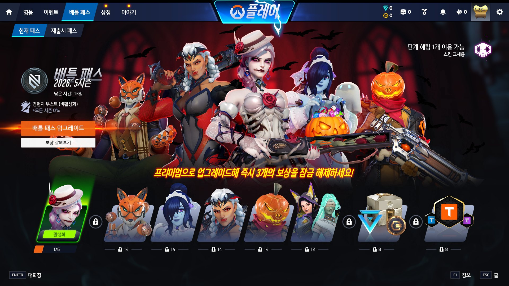
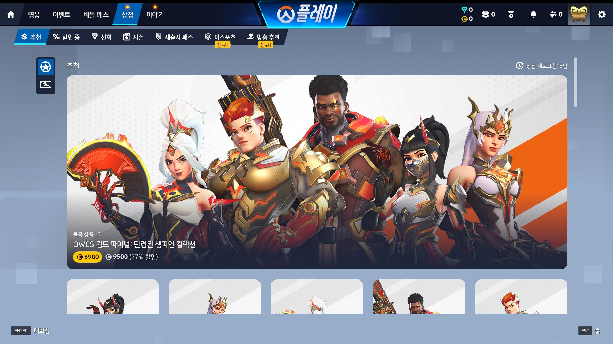
- 배틀 패스: '프리미엄으로 업그레이드해 즉시 3개의 보상을 잠금 해제' 문구 · 보상마다 잠금 표시와 숫자(14·12·8)
- 상점 추천: 묶음 상품 15개를 한 번에 6,900 코인 (정가 9,500 · 27% 할인) · 구성은 고를 수 없음 · 새로고침 6일 남음
- 상점 탭: 추천 · 할인 중 · 신화 · 시즌 · 재출시 패스 · 이스포츠 · 맞춤 추천
같은 화면에서도 영웅별 스킨 수와 가격대가 다르다
실제 자료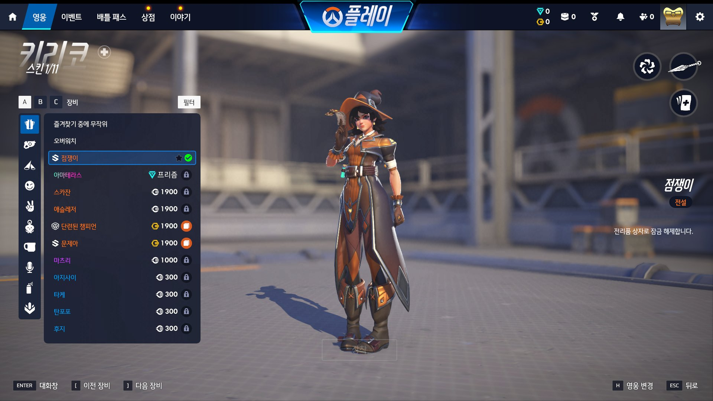
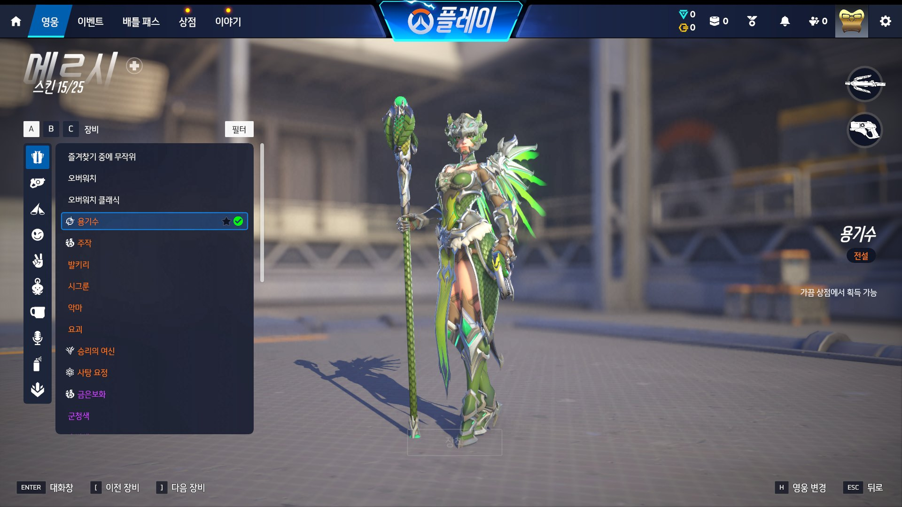
| 키리코 | 메르시 | |
|---|---|---|
| 스킨 수 표기 | 1/11 | 15/25 |
| 목록에 보이는 가격 | 1,900 코인 4종 · 1,000 코인 1종 · 300 코인 4종 · 프리즘 1종(신화) | 보이는 항목에 가격 표기 없음 |
| 획득 경로 문구 | 점쟁이(전설): 전리품 상자로 잠금 해제 | 용기수(전설): 가끔 상점에서 획득 가능 |
신화 스킨은 이미 '단계별 해금' 구조다: 50 → 10 → 10 → 10 프리즘
실제 자료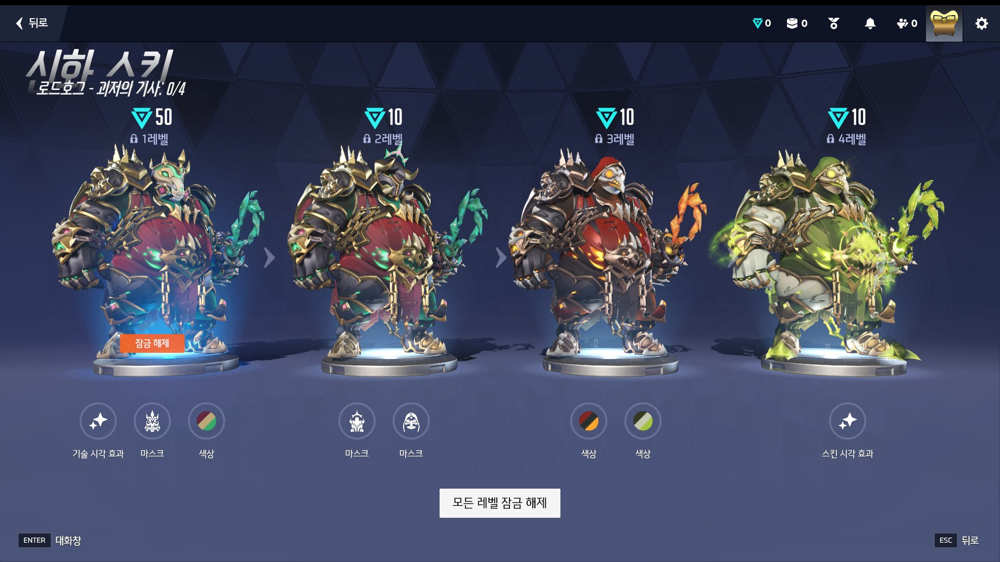
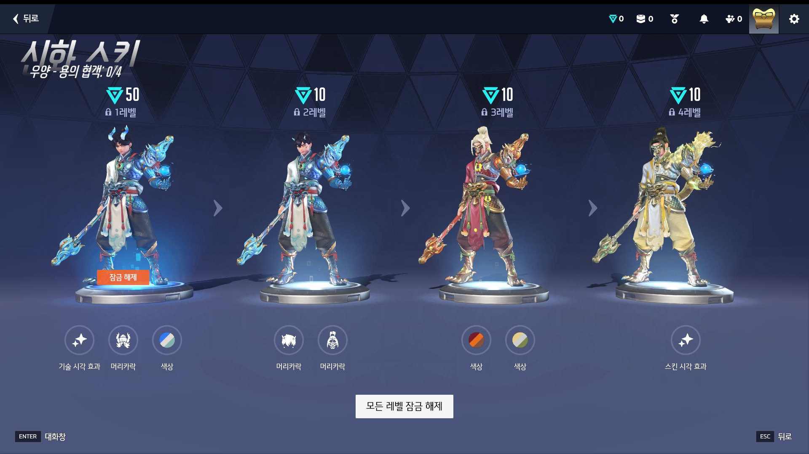
- 로드호그 '과거의 기사'와 우양 '용의 협객' 모두 4단계 · 1레벨 50, 2~4레벨 각 10 = 총 80 프리즘
- 단계마다 추가: 1레벨 기술 시각 효과·마스크/머리카락·색상 → 2레벨 마스크/머리카락 2종 → 3레벨 색상 2종 → 4레벨 스킨 시각 효과
- '모든 레벨 잠금 해제' 버튼으로 한 번에 구매 가능
판매 상품 8종 정리 · 캡처에서 확인한 내용만 펼쳐보기
| 상품 | 판매 방식 | 가격 | 구성·해금 구조 | 근거 화면 |
|---|---|---|---|---|
| 일반 스킨 | 영웅 스킨 목록에서 코인으로 개별 잠금 해제 | 300 코인 4종 · 1,000 코인 1종 (키리코 목록) | 등급 표기는 선택한 스킨에만 보여 등급별 가격은 캡처에서 확인 안 됨 | kiriko_skins |
| 전설 스킨 | 코인 구매 · 전리품 상자(점쟁이) · '가끔 상점에서 획득 가능'(용기수) | 1,900 코인 4종 (키리코 목록 · 전설 점쟁이와 같은 주황색 표기) | 스킨마다 획득 경로가 다름 | kiriko_skins · mercy_skins |
| 프리미엄 배틀패스 | 배틀 패스 화면의 '배틀 패스 업그레이드' | 캡처에서 확인 안 됨 | '프리미엄으로 업그레이드해 즉시 3개의 보상을 잠금 해제' 문구 · 보상은 단계(14·12·8 등)별 잠금 | battle_pass |
| 얼티밋 배틀패스 | 캡처에서 확인 안 됨 | 캡처에서 확인 안 됨 | 캡처에서 확인 안 됨 | — |
| 신화 스킨 | 상점 '신화' 탭 · 신화 프리즘으로 단계 해금 | 1레벨 50 + 2~4레벨 각 10 = 80 프리즘 (로드호그·우양 동일) | 4단계 · 레벨마다 기술 시각 효과·마스크/머리카락·색상·스킨 시각 효과 추가 | mythic_roadhog · mythic_wuyang |
| 신화 무기 스킨 | 캡처에서 확인 안 됨 | 캡처에서 확인 안 됨 | 캡처에서 확인 안 됨 | — |
| 오버워치 코인 | 상점·스킨 가격 단위 | 묶음 상품 15종 6,900 코인 (정가 9,500 · 27% 할인) · 원화 환산 캡처에서 확인 안 됨 | 상점 새로고침 6일 남음 표기 | store_main |
| 신화 프리즘 | 캡처에서 확인 안 됨 | 캡처에서 확인 안 됨 | 신화 스킨 단계 해금 재화 (키리코 '아마테라스'도 프리즘 표기) | mythic_roadhog · kiriko_skins |
05 신규 BM 제안
YOUR HERO. 당신의 영웅도 주인공입니다.
기획 시안유저 참여형 스킨 제작 프로젝트
스킨 판매가 인기 영웅 중심 · 키리코 11종 vs 메르시 25종 (캡처)
만들기 전에는 수요를 몰라 신규 스킨 제작비가 위험하다
후보 영웅·콘셉트를 유저 투표로 고르고, 사업성을 함께 검토해 제작
제작 전 수요 확인 · 상품이 적은 영웅의 구매 수요 발굴
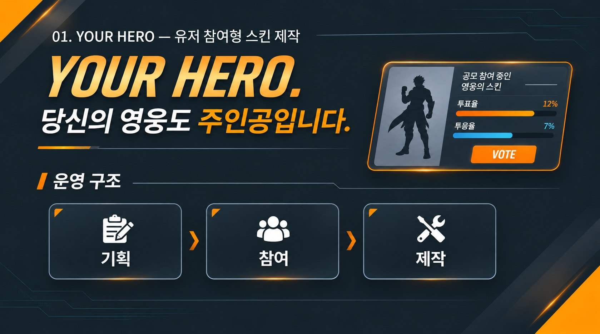
- 1기획신규 스킨 제작 후보 영웅과 콘셉트 선정
- 2참여유저 투표와 선호도 조사
- 3제작투표 결과와 사업성을 함께 검토한 뒤 제작·출시
YOUR CHOICE. 원하는 영웅, 원하는 스킨.
기획 시안선택형 스킨 패키지
상점 추천 묶음은 15개 고정 구성 · 원하는 스킨만 고를 수 없다 (캡처)
원하지 않는 스킨이 섞이면 구매 부담이 커져 구매를 미룰 수 있다
원하는 스킨 3개·5개를 직접 골라 20%·30% 할인
구매 전환율 · 평균 결제 금액 상승 가능성 (검증 전)
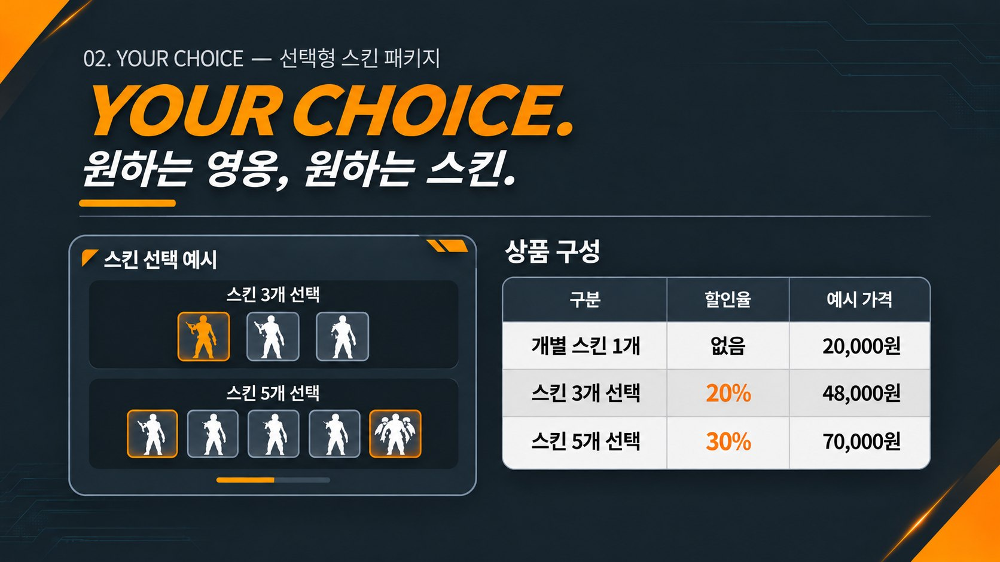
기존 상점 추천 묶음실제 캡처
상점이 정한 구성- 구성
- 15개 고정 · 선택 불가
- 가격
- 6,900 코인 (정가 9,500 · 27% 할인)
- 구매 판단
- 원하지 않는 스킨도 함께 산다
YOUR CHOICE기획 시안
유저가 고른 구성- 구성
- 원하는 영웅·스킨 3개 또는 5개
- 가격
- 48,000원 · 70,000원 (예시 · 20%·30%)
- 구매 판단
- 원하는 스킨만 · 많이 고를수록 할인
예시 가격 계산 · 정가 합계 대비 할인액 펼쳐보기
| 구분 | 할인율 | 예시 가격 | 정가 합계 대비 |
|---|---|---|---|
| 개별 스킨 1개 | 없음 | 20,000원 | — |
| 스킨 3개 선택 | 20% | 48,000원 | 60,000원 − 12,000원 |
| 스킨 5개 선택 | 30% | 70,000원 | 100,000원 − 30,000원 |
- 1패키지 대상 스킨 목록 제공
- 2유저가 원하는 영웅과 스킨 선택
- 3선택 수량에 따라 할인 적용
- 4최종 구성 확인 후 구매
- 1YOUR CHOICE기존 스킨 활용 테스트 · 신규 제작비 없음
- 2YOUR HERO투표·수요 검증
- 3신규 스킨 제작·출시검증된 영웅만
06 KPI·사업성
마케팅·운영 전략 6개로 복귀율 → 잔존 → 구매 전환 → 객단가를 차례로 올린다
기획 시안사용자 지정 전략 6개 · 실행 방식은 기획 시안 · 목표 수치는 아래 시뮬레이터의 가정값
전략별 실행 방식 · 제안별 타깃·마케팅 채널·목표 KPI (RE:START · YOUR CHOICE · YOUR HERO) 펼쳐보기
| 전략 | 실행 방식 | 타깃 유저 | 개선 목표 | 측정 KPI |
|---|---|---|---|---|
| 휴면 유저 복귀 캠페인 | 90일 이상 미접속 유저에게 앱 푸시·이메일·PC방 혜택 안내로 복귀 계기 제공 | 휴면 유저 | 복귀율 | 복귀율 · 캠페인 클릭률 |
| PROJECT RE:START 적응 지원 | 복귀 직후 변경점 브리핑 · 첫 10경기 학습 미션 · 전투 학습 카드 | 복귀·신규 유저 | D7·D30 잔존율 | 복귀 D7·D30 잔존율 |
| YOUR HERO 투표 캠페인 | 커뮤니티와 인게임에서 다음 스킨 후보 영웅·콘셉트 투표 | 전체 활성 유저 | 참여 · 제작 전 수요 확인 | 투표 참여율 · 영웅별 선호도 |
| YOUR CHOICE 출시 프로모션 | 출시 기간 3·5개 패키지 할인을 상점 메인·로비 배너로 안내 | 미결제·소액 결제 유저 | 구매 전환율 · 평균 결제 금액 | 패키지 구매 전환율 · 평균 결제 금액 |
| 선호 영웅 기반 맞춤 노출 | 많이 플레이한 영웅의 스킨을 상점 '맞춤 추천' 탭에 우선 노출 | 구매 이력이 적은 유저 | 구매 전환율 | 노출 대비 구매율 · 영웅별 판매량 |
| 시즌별 패키지 운영 | 시즌마다 패키지 대상 스킨을 교체하고 이전 구매자에게 새 구성 안내 | 기존 구매 유저 | 재구매 · 평균 결제 금액 | 재구매율 · 시즌별 패키지 매출 |
| 제안 | 타깃 유저 | 마케팅 채널 | 실행 방식 | 목표 KPI |
|---|---|---|---|---|
| PROJECT RE:START | 90일 이상 미접속 복귀 유저 · 신규 유저 | 복귀 알림(앱 푸시·이메일) · 접속 직후 화면 · PC방 혜택 안내 | 휴면 복귀 캠페인으로 다시 접속하게 하고, 접속 직후 브리핑·학습 카드·첫 10경기 미션으로 첫 주 적응을 돕는다 | 복귀율 · 복귀 D7·D30 잔존율 · 신규 D7 잔존율 |
| YOUR CHOICE | 미결제·소액 결제 유저 · 기존 구매 유저 | 상점 메인 · '맞춤 추천' 탭 · 로비 배너 · 시즌 공지 | 기존 스킨으로 3·5개 선택 패키지를 구성해 출시 프로모션 → 시즌마다 대상 스킨 교체·재구매 안내 | 패키지 구매 전환율 · 평균 결제 금액 · 개별 스킨 매출 잠식률 |
| YOUR HERO | 전체 활성 유저 (특히 스킨이 적은 영웅을 주로 하는 유저) | 공식 커뮤니티 · 인게임 투표 배너 · 공식 SNS · 스트리머 | 후보 영웅·콘셉트 투표 → 결과 공개 → 사업성 검토 후 제작 → 출시·구매 인증 캠페인 | 투표 참여율 · 영웅별 선호도 · 참여 유저 구매 전환율 · 출시 후 판매량 |
기존 대비 개선 효과: 같은 유저에서 구매자와 객단가가 함께 오른다
가정 시뮬레이션모든 수치는 기획용 가정 · 실제 오버워치 내부 데이터가 아님 · 분기(13주) 기준 · 개선값은 마케팅·BM 전략의 목표 가정
가정값 바꾸기 · 노출 유저 · 복귀율 · D7·D30 잔존율 · 구매 전환율 · 평균 결제 금액 펼쳐보기
YOUR CHOICE 시뮬레이터: 전환율과 패키지 비중이 매출을 바꾼다
가정 시뮬레이션입력값 기반 가정 시뮬레이션 · 실제 매출 예측치가 아님 · 기존 매출은 '구매자가 개별 스킨 1개(20,000원)를 산다'고 가정
가정값 바꾸기 · 노출 유저 · 전환율 · 개별·3개·5개 구매 비중 펼쳐보기
판단 KPI · 복귀율과 매출은 따로 본다 (07 최종 판단표와 같은 기준) 펼쳐보기
| 트랙 | 지표 | 기준 | 판단 |
|---|---|---|---|
| 복귀율 · RE:START A | 복귀 D7 잔존율 | 30% → 32% (목표·가정 +2.0%p) | 95% 신뢰구간 하한 > 0 이고 목표 이상이면 확대 |
| 복귀율 · RE:START C | 신규 D7 잔존율 | 20% → 22% (목표·가정 +2.0%p) | A 결과 후 실험 2로 판정 |
| 매출 · YOUR CHOICE | 패키지 구매 전환율 · 평균 결제 금액 | 판매 테스트의 기준값 확인 후 목표 설정 | 개별 스킨 잠식을 빼고도 순증일 때 확대 |
| 매출 · YOUR HERO | 투표 참여율 · 참여 유저 구매 전환율 | 투표 파일럿의 기준값 확인 후 목표 설정 | 제작 비용 대비 예상 수익이 남을 때 제작 |
고급 사업성 분석 · 신규 스킨을 직접 만들 때
가정 시뮬레이션비용·수수료·잠식률은 확인된 내부 값이 아닌 입력 가정
고급 사업성 분석 열기 · 손익분기 · 개발비 · 마케팅비 · 수수료 · 잠식률 · ROI (모두 가정) 펼쳐보기
고급 설정 · 잠식률 · 잔존율 개선폭 · PUR · ARPPU · 수수료 · 개발비 · 기타 운영비 펼쳐보기
계산 순서 · 공식 · 현재 값 펼쳐보기
가정값 · 기본 · 보수적 · 낙관적
| 변수 | 보수적 | 기본 | 낙관적 | 설명 |
|---|---|---|---|---|
| 캠페인 노출 유저 (명) | 100,000 | 100,000 | 100,000 | 신규 스킨에 노출되는 활성·복귀 유저 (기존 시뮬레이션의 '코호트 외 활성 유저' 가정과 같음) |
| 스킨 판매 가격 (원) | 20,000 | 20,000 | 20,000 | YOUR HERO로 출시하는 신규 스킨 1개 판매가 (기획 가정) |
| 상품 구매 전환율 (%) | 1.0 | 2.0 | 3.0 | 노출 유저 중 신규 스킨 구매 비율 |
| 마케팅 비용 (원) | 50,000,000 | 50,000,000 | 50,000,000 | 투표·출시 캠페인 집행비 (분기 · 기획 가정) |
| 기존 상품 매출 잠식률 (%) | 40 | 25 | 15 | 신규 스킨 매출 중 기존 스킨을 대신 산 몫 (순증에서 제외) |
| 분기 신규·복귀 유입 (명) | 195,000 | 195,000 | 195,000 | 잔존율 개선이 적용되는 유저 (05 실험 설계의 분기 유입: 복귀 13만 + 신규 6.5만) |
| D7 잔존율 개선폭 (%p) | 1.0 | 2.0 | 3.0 | RE:START A·C 실험 목표(MDE)와 같음 · 배정 기준 |
| D30 잔존율 개선폭 (%p) | 0.5 | 1.0 | 1.5 | D7 개선폭보다 클 수 없음 (D30 잔존 유저는 D7 잔존 유저에 포함) |
| 결제율 (PUR) (%) | 3.0 | 5.0 | 8.0 | 순증 활성 유저 중 분기 결제 비율 |
| ARPPU (분기) (원) | 15,000 | 25,000 | 35,000 | 결제 유저 1명의 분기 결제액 |
| 결제·플랫폼 수수료율 (%) | 30 | 30 | 30 | 판매 채널별로 다를 수 있어 단일 가정 |
| 개발 인력 (인월) (인월) | 17 | 17 | 17 | RE:START A~C 11인월 + 신규 스킨 제작 6인월 (기획 가정) |
| 인월당 비용 (원) | 6,000,000 | 6,000,000 | 6,000,000 | 기존 실험 설계의 1인 월 비용 가정과 같음 |
| 기타 운영 비용 (원) | 0 | 0 | 0 | 서버·CS·보상 등 (확인 전이라 기본 0원) |
A/B 실험 설계 · KPI 정의 10개 · 표본·일정 · 판단 기준 펼쳐보기
실험은 기능 1개씩 — 실험 1 A 복귀 브리핑(복귀 D7) → 실험 2 C 첫 10경기 미션(신규 D7) → 실험 3 B 사용성
| 실험 · 이유 | 대상 · 배정 | 주요 지표 (1개) | MDE · 필요 표본 (가정) | 일정 (주차) |
|---|---|---|---|---|
| 실험 1 A 복귀 브리핑 단독 근거가 가장 많고 개발 범위가 작아 먼저 검증 | 복귀 배정 50:50 | 복귀 D7 잔존율 (ITT) 보조: 7일 내 재방문율 · 복귀 D30 잔존율 | +2.0%p (30→32%) · 그룹당 8,394명 | 배정 1~2주 · D7 3주 · D30 7주 |
| 실험 2 C 첫 10경기 학습 미션 단독 A와 대상이 겹치지 않아 효과를 따로 측정 | 신규 배정 50:50 | 신규 D7 잔존율 (ITT) 보조: 첫 10경기 완료율(14일) · 신규 D30 잔존율 | +2.0%p (20→22%) · 그룹당 6,510명 | 배정 3~5주 · D7 6주 · D30 10주 |
| 실험 3 B 학습 카드 수동형 사용성 검증 잔존 효과는 판단하지 않음 (표본이 작고 희망자만 참여) | 신규·복귀 희망자 (소규모) 배정 희망자 대상 | 카드 사용률 · 30분 내 다음 경기 시작률 보조: 카드 만족도 · 잘못된 팁 신고 | 잔존 효과 판단 안 함 | 6~9주 |
| 실험 4 (선택) A×B 2×2 요인 실험 실험 1에서 A 확대가 결정되고 실험 3을 통과했을 때만 진행 | 복귀 배정 25:25:25:25 | 복귀 D7 잔존율 (ITT) 보조: A·B 각각의 효과와 함께 썼을 때 추가 효과 | 실험 1·3 결과 후 별도 산정 | 조건 충족 시 |
| 지표 · 역할 | 계산 (분자 ÷ 분모) | 측정 시점 | 목표 (MDE) |
|---|---|---|---|
| 복귀 D7 잔존율주요 (실험 1) 90일 이상 미접속 후 돌아온 계정 | 복귀일을 Day 0으로 할 때 Day 7 당일(KST 0~24시)에 1회 이상 접속한 계정÷ 실험에 배정된 복귀 계정 전체 (기능 사용 여부와 무관 · ITT) | 복귀일 + 7일 · 마지막 배정일 + 7일에 관측 완료 | +2.0%p (기준 30% 가정) |
| 신규 D7 잔존율주요 (실험 2) 실험 기간에 처음 접속한 신규 계정 | Day 7 당일에 1회 이상 접속한 계정÷ 실험에 배정된 신규 계정 전체 (ITT) | 첫 접속일 + 7일 | +2.0%p (기준 20% 가정) |
| 7일 내 재방문율보조 복귀·신규 계정 | Day 1~Day 7 중 하루라도 접속한 계정÷ 배정 계정 전체 | 첫 접속(복귀)일 + 7일 | 방향 확인용 · D7 잔존율보다 항상 크거나 같음 |
| D30 잔존율보조 복귀·신규 계정 | Day 30 당일에 1회 이상 접속한 계정÷ 배정 계정 전체 (ITT) | 첫 접속(복귀)일 + 30일 · 마지막 배정일 + 30일에 관측 완료 | +1.0%p (배정 기준) |
| 첫 10경기 완료율선행 (실험 2) 신규 계정 | 첫 접속 후 14일 안에 10경기를 마친 계정÷ 배정 신규 계정 전체 | 첫 접속일 + 14일 | +5.0%p (기준 32.7% 가정) |
| 복귀 브리핑 완료율선행 (실험 1) 브리핑을 시작한 복귀 계정 | 마지막 카드까지 본 계정÷ 브리핑 시작 계정 | 노출 당일 | 60% 이상 (가정 기준선) |
| 학습 카드 사용률선행 (실험 3) 카드 버튼이 노출된 계정 | 카드를 1회 이상 연 계정÷ 버튼 노출 계정 | 실험 기간 전체 | 20% 이상 (가정 기준선) |
| 다음 경기 시작률선행 (실험 3) 카드를 연 계정 | 카드 확인 후 30분 안에 다음 경기를 시작한 계정÷ 카드를 연 계정 | 카드 확인 후 30분 | 대조군(카드 미노출) 이상 |
| 불만·신고율안전 실험군·대조군 전체 | 기능 관련 문의·신고 건수÷ 활성 계정 1,000명 | 주간 | 대조군 대비 유의한 증가 없음 |
| 경기 시작률안전 실험군·대조군 전체 | 접속 당일 1경기 이상 시작한 계정÷ 접속 계정 | 일간 | 대조군 대비 유의한 감소 없음 |
| 구분 | 지표 | 확인 가능 여부 |
|---|---|---|
| 실제 자료 | Steam 동시접속자 · 한국 PC방 점유율 | 공개 자료 (Steam 한정 · 한국 PC방 표본) |
| 내부 데이터 필요 | DAU · D7 · D30 · 경기 완료율 | 넥슨·블리자드 로그 필요 · 기준값은 모두 가정 |
| 준비 2주 이후 | 1주 | 2주 | 3주 | 4주 | 5주 | 6주 | 7주 | 8주 | 9주 | 10주 |
|---|---|---|---|---|---|---|---|---|---|---|
| 실험 1 · A (복귀) | 배정 | 배정 | D7 판정 | D30 확인 | ||||||
| 실험 2 · C (신규) | 배정 | 배정 | 배정 | D7 판정 | 10경기 | D30 확인 | ||||
| 실험 3 · B 수동형 | 사용성 | 사용성 | 사용성 | 사용성 | ||||||
| 의사결정 | A 1차 | A 확정 | 최종 |
| 결과 | 판단 기준 |
|---|---|
| 확대 | 주요 지표 효과의 95% 신뢰구간 하한이 0보다 크고(통계적 유의), 점추정이 MDE 이상(사업적 의미)이며, 안전 지표 악화가 없다 |
| 조건부 확대 | 통계적으로 유의하지만 점추정이 MDE보다 작다 → 비용 대비 효과를 다시 계산하고 일부 지역·코호트로만 넓힌다 |
| 수정 후 재실험 | 유의하지 않고 선행 지표(브리핑 완료율 60%·카드 사용률 20%)도 기준 미달 → 진입 위치·문구를 고쳐 1회 재실험 |
| 중단 | 재실험에서도 효과가 없거나, 불만·신고율 유의 증가 또는 경기 시작률 유의 감소가 확인된다 |
측정 방법 — 두 비율 차이 검정(양측, α=0.05, 검정력 80%). 표본은 배정 기준(ITT)으로 사전에 산정하고, 산정 표본을 채우기 전에는 결론을 내리지 않는다. 실험마다 주요 지표는 1개만 둔다.
배정 — 계정 단위 무작위 배정 · 실험마다 대상 코호트가 겹치지 않게 분리 (D는 친구 그룹 단위)
즉시 중단 — 불만·신고율 급증, 경기 시작률 하락, 오류 증가 중 하나라도 확인되면 기능 스위치로 즉시 중단
표본 계산기 · 기본값은 실험 1(복귀 D7)
잔존율 시뮬레이션 결과 · D7·D30 · 첫 10경기 퍼널 · DAU (가정) 펼쳐보기
KPI 연결 구조 (가설)
| 개선 방향 | 전략 | 확인할 지표 |
|---|---|---|
| 변경점 파악 | A | 브리핑 시작·완료율 |
| 학습 순서 | C | 미션 참여·완료율 · 첫 10경기 완료율 |
| 상대 대응 | B | 카드 사용률 · 30분 내 다음 경기 시작률 |
| 정착 | A · C (B는 실험 4) | D7 잔존율 (주요) · D30 잔존율 |
| PC방 확장 (D) | D | PC방 복귀 유저 수 · 친구 동반 플레이율 |
계산식 — 개선 후 잔존율 = 기존 잔존율 + 참여율 × 개선 폭 (D1 ≥ D7 ≥ D30 보정) · 전체 잔존율 = 인원 가중 평균 · 적응 퍼널 = 이전 단계 × 전환율 (신규 코호트만) · DAU = 코호트 외 활성 유저 + Σ 일별 유입 × 잔존 곡선 × 일일 접속 확률 · 기존 유저는 실험 대상이 아니며 불만·신고율로만 관찰
잔존율 시뮬레이션 설정 (가정값) · 값을 바꾸면 위 결과가 바로 바뀜 펼쳐보기
퍼널은 KPI '첫 10경기 완료율'과 같이 신규 코호트만으로 계산합니다.
07 최종 판단
복귀율은 A 파일럿부터, 매출은 YOUR CHOICE → YOUR HERO → 신규 스킨 순서로
기획 시안의견 63건 중 38건과 실제 화면이 학습 부담을 보여 주지만 이탈 원인인지는 로그와 A/B 테스트로 확인한다.
키리코 11종과 메르시 25종, 15개 고정 묶음은 사실이고, 유저 선호와 어긋나는지는 [검증 전] 영웅별 플레이·구매 데이터로 확인한다.
가정 기준 신규 스킨 손익분기 전환율은 14.3%로 높다. 신규 스킨 제작비가 들지 않는 YOUR CHOICE로 먼저 매출을 확인하고, YOUR HERO 투표로 수요를 본 뒤 제작한다.
| 실행 전략 | 핵심 KPI | 기대 효과 (검증 전) | 확대 조건 | 중단 · 보류 조건 |
|---|---|---|---|---|
| PROJECT RE:START A 복귀 브리핑부터 | 복귀 D7 잔존율 (목표 +2.0%p · 가정) | 복귀 첫 주 적응 · 잔존 개선 | D7 효과의 95% 신뢰구간 하한 > 0 이고 목표 이상 → C·B 확대 | 재실험에도 효과 없음 · 불만·신고율 유의 증가 |
| ① YOUR CHOICE 기존 스킨 활용 테스트 | 패키지 구매 전환율 · 평균 결제 금액 | 구매 전환·객단가 상승 | 잠식을 빼고도 순증 → 전체 출시·시즌 운영 | 개별 스킨 잠식이 순증보다 큼 · 평균 결제 금액 하락 → 구성·할인율 조정, 반복되면 중단 |
| ② YOUR HERO 투표·수요 검증 | 투표 참여율 · 영웅별 선호도 | 제작 전 수요 확인 · 커뮤니티 참여 | 선호가 뚜렷하고 손익분기 조건 충족 → 제작 | 참여가 낮아 수요 판단 불가 → 후보·채널 조정 후 1회 재시도 |
| ③ 신규 스킨 제작·출시 | 출시 후 판매량 · 제작비 대비 수익 | 상품이 적은 영웅의 구매 수요 발굴 | 제작비 대비 수익 기준 초과 → 다음 투표 회차 | 예상 수요가 손익분기 조건 미달 → 제작 보류 |
BM 실행 순서와 단계별 일정
기획 시안기획안 · 단계별 기간은 가정이며 실제 일정은 개발·운영 협의로 확정
- 대상 스킨·할인율 확정 (약 2주)
- 일부 유저 판매 테스트 · 할인율 비교 (약 4주)
- 출시 프로모션 · 상점 메인·맞춤 추천 노출
- 시즌별 구성 교체 · 재구매 안내
다음 단계 조건패키지 전환율·평균 결제 금액이 오르고, 개별 스킨 잠식을 빼고도 순증
- 후보 영웅·콘셉트 선정 (약 2주)
- 커뮤니티·인게임 투표 (약 2주)
- 결과 공개 · 영웅별 선호 집계
- 제작비 대비 예상 수익 검토 → 제작 여부 결정
다음 단계 조건투표 참여율과 특정 영웅 선호가 충분하고, 고급 사업성 분석의 손익분기 조건을 만족
- 제작 (기간은 개발팀 협의)
- 출시 예고 · 스트리머 선공개
- 출시 · 구매 인증 캠페인
다음 단계 조건출시 후 판매량이 제작비 대비 수익 기준을 넘으면 다음 투표 회차 진행
RE:START 파일럿 일정 · 준비 2주 + 운영 10주
RE:START 확대 · 수정 · 중단 기준 (4단계) 펼쳐보기
| 결과 | 기준 |
|---|---|
| 확대 | 주요 지표 효과의 95% 신뢰구간 하한이 0보다 크고(통계적 유의), 점추정이 MDE 이상(사업적 의미)이며, 안전 지표 악화가 없다 |
| 조건부 확대 | 통계적으로 유의하지만 점추정이 MDE보다 작다 → 비용 대비 효과를 다시 계산하고 일부 지역·코호트로만 넓힌다 |
| 수정 후 재실험 | 유의하지 않고 선행 지표(브리핑 완료율 60%·카드 사용률 20%)도 기준 미달 → 진입 위치·문구를 고쳐 1회 재실험 |
| 중단 | 재실험에서도 효과가 없거나, 불만·신고율 유의 증가 또는 경기 시작률 유의 감소가 확인된다 |
대표 전략 A 요약 · 우선순위 · 개발·운영 비용 검산 펼쳐보기
| 단계 | A 복귀 브리핑 (먼저 실행) |
|---|---|
| 문제 | 복귀 후 바뀐 영웅·규칙을 모른 채 첫 주에 막힌다 (이탈 원인은 가설 · 매칭·실력·팀원 요인도 함께 확인) |
| 근거 | 검증 의견 63건 중 학습·적응 38건 · 복귀 유저 15건 중 10건 · 공식 복귀 요약과 방향이 같음 |
| 해결책 | 접속 직후 놓친 변경점 3개 요약 (영웅·밸런스·매칭은 바꾸지 않음) |
| 비용 | 3인월 × 600만 원 = 1,800만 원 (일회성 · 가정) · 유지보수 별도 |
| KPI | 복귀 D7 (ITT) · 목표 +2.0%p (목표값 · 실적 아님) · 보조: 브리핑 완료율 · 첫 10경기 완료율 · D30 |
| 실험 | 복귀 계정 50:50 · 그룹당 8,394명 · 3주차 D7 판정 (주당 유입 가정 기준) |
| 사업적 판단 | 소규모 파일럿 → 유의하면 확대 · 개발비가 가장 작고 실패해도 손실이 작다 |
| 순서 | 개선안 | RICE | 이유 | 구현 난이도 |
|---|---|---|---|---|
| 1순위 · 먼저 | A 복귀 브리핑 | 13,867점 | 복귀 의견 근거가 가장 많고 공식 복귀 요약과 방향이 같음 | 중간 · 마지막 접속일↔패치 이력 매핑 |
| 2순위 | C 첫 10경기 적응 미션 | 7,800점 | 신규 정착 효과가 크지만 미션 설계 검증 필요 | 중간 · 미션 조건·보상 설계 |
| 3순위 · 수동형부터 | B 전투 학습 카드 | 4,875점 | 게임 데이터 협업 범위가 불확실 | MVP 낮음 · 공식 설명+대처 콘텐츠만 |
| 보류 | D PC방 친구 동반 복귀 이벤트 | 1,170점 | 넥슨·블리자드 협의와 비용 검증 필요 | 높음 · 넥슨·블리자드 협의 |
| 개선안 | 공수 | 개발·운영 비용 | 기대 효과 (가정) | 추가 D7 1명당 |
|---|---|---|---|---|
| A 복귀 브리핑 | 3인월 | 1,800만 원 | 분기 추가 복귀 D7 약 2,600명 | 약 6,923원 |
| C 첫 10경기 미션 | 4인월 | 2,400만 원 | 분기 추가 신규 D7 약 1,300명 | 약 18,462원 |
| B 전투 학습 카드 | 4인월 | 2,400만 원 | 사용성 검증 · 잔존 효과는 판단 안 함 | — |
| A~C 합계 | 11인월 | 6,600만 원 | D(보류) 5인월 · 3,000만 원은 합계 제외 |
복귀 유저 정의 · 실패 대응 · 일정 민감도 펼쳐보기
- 추가 복귀 D7 약 2,600명 = 분기(13주) 복귀 유입 130,000명 × 복귀 D7 MDE +2.0%p (ITT · 가정)
- A 비용 1,800만 원 = 3인월 × 600만 원 (개발·QA 인건비 가정 · 실제 견적 아님) · 유지보수·콘텐츠 갱신 비용은 미포함
- D7 +2.0%p는 실험 목표이지 달성한 성과가 아니다 · 모집단·기준 잔존율은 파일럿 전 과거 로그로 다시 정한다
- 일정 민감도 그룹당 8,394명 × 2 필요 · 주당 복귀 유입 10,000명(가정)이면 배정 2주 → 3주차 D7 판정 · 주당 3,000명이면 배정 6주
- 추가 D7 유저당 비용은 이미 들어온 복귀 유저를 더 남기는 비용이다 · 새 유저 획득 비용(CAC)과 비교하지 않는다
| 구분 | 운영상 정의 (실험용 · 실제 데이터 아님) |
|---|---|
| 복귀 유저 | 90일 이상 미접속 후 재접속 · 같은 계정의 과거 플레이 이력 있음 · 신규 가입 계정 제외 |
| 세그먼트 | 미접속 기간 (90~180일 / 180일+) × 과거 경쟁전 경험 (있음 / 없음) → 층화 무작위 배정 |
| 오염 방지 | 계정 단위 배정 · 실험 기간 중 그룹 고정 · 같은 기간 대조군과만 비교 (전후 비교 금지) |
| D7이 개선되지 않았을 때 | 확인 지표 | 결정 |
|---|---|---|
| 브리핑을 보지 않음 | 브리핑 시작률 | 수정 · 진입 위치·문구 실험 후 재실험 |
| 끝까지 보지 않음 | 완료율 · 이탈 지점 | 수정 · 길이 축소 (핵심 3개) |
| 봤지만 이해 못 함 | 이해 확인 1문항 · 문의율 | 수정 · 표현·예시 교체 |
| 이해했지만 적응으로 안 이어짐 | 첫 10경기 완료율 · 30분 내 다음 경기 | 중단 검토 · 정보 부족이 원인이 아님 → C 미션으로 넘김 |
MVP 범위 · 현실적인 제약과 대응 · 담당 · 이벤트 로그 · 롤백 기준 펼쳐보기
- 1단계 A 복귀 브리핑 (카드 3~5장 · 건너뛰기 · 다시 보기)
- 2단계 C 첫 10경기 학습 미션 (선택형 · 학습 행동 기준)
- 3단계 B 학습 카드 수동형 (유저가 상대 영웅 선택 · 소규모 사용성 검증)
- 실험 배정 · 이벤트 로그 · 대시보드
- B 처치 기록 기반 자동 원인 분석 (기술 검증 후 별도 검토)
- D PC방 친구 동반 이벤트 (넥슨 협의 · A~C 결과 확인 후)
- 영웅·밸런스·매칭 규칙 변경
- 유료 보상
| 제약·리스크 | 대응 |
|---|---|
| 기능을 건너뛰는 유저가 많음 | 짧은 진입, 문구 실험, 선행 지표로 조기 확인 |
| 공략 획일화 | 대처법을 선택지로 제시, 메타 다양성 모니터링 |
| 보상 악용·부계정 | 행동 기준 보상, 일일 한도, 계정 이력 확인 |
| 개발사·퍼블리셔 협의 지연 | 웹·런처 기반 MVP로 먼저 검증 |
| 콘텐츠 갱신 비용 | 패치노트 연동 카드 템플릿 |
| 담당 | 역할 |
|---|---|
| 사업PM | 목표 KPI·실험 설계 총괄, 의사결정 |
| 게임 디자인·UX | 브리핑·카드·미션 내용과 흐름 |
| 클라이언트·서버 개발 | 기능 구현 (블리자드 개발 협업 필요) |
| 데이터 분석 | 로그 설계, 대시보드, 실험 분석 |
| QA | 기능·로그 누락 검수 |
| CS·커뮤니티 | 공지, 문의·불만 모니터링 |
| 넥슨 PC방 사업 (확장안) | PC방 이벤트 운영 (D 진행 시) |
필요한 이벤트 로그 · experiment_assigned (실험군/대조군) · briefing_shown / started / completed / skipped · card_shown / viewed (상대 영웅) / closed · next_match_started (카드·브리핑 이후) · mission_opt_in / progress / completed / opt_out · match_completed (코호트·모드) · session_start (D1·D7·D30 산출) · report_submitted · cs_ticket (불만·신고) · notification_sent / dismissed / frequency_changed
출시 전 점검 · 실험군·대조군 배정 비율 이상 여부 확인 · 로그 누락·중복 테스트 · 건너뛰기·다시 보기·끄기 동작 확인 · 문구 현지화·용어 검수 · 기능 끄기 스위치(feature flag) 준비 · CS 예상 문의 FAQ 준비
롤백 기준 · 불만·신고율이 대조군보다 뚜렷하게 높을 때 · 경기 시작률이 대조군보다 떨어질 때 · 오류·크래시 증가 · 보상 목적 비정상 플레이 증가 · 배정 비율 이상으로 실험 신뢰도 훼손